<title>Where Should the Robot Stand?</title>
<meta name="claude:viewport-fit-sides" content="cover">
<link rel="preconnect" href="https://fonts.googleapis.com">
<link rel="preconnect" href="https://fonts.gstatic.com" crossorigin>
<link rel="stylesheet" href="https://fonts.googleapis.com/css2?family=Bricolage+Grotesque:opsz,wght@12..96,500;12..96,700&family=IBM+Plex+Sans:ital,wght@0,400;0,500;0,600;1,400&family=IBM+Plex+Mono:wght@400;500&display=swap">
<style>
  /* Layout: one reading column on a faint floor-plan grid; results set as "plates" with the map colours the project
     already uses (green = good place to stand, red hatch = would cut in, blue = people). */
  :root {
    --bg: #f4f6f7; --panel: #ffffff; --ink: #14202b; --muted: #55636f; --line: #d9e0e5;
    --good: #1d8a4e; --good-soft: #d6efe0; --bad: #c4443c; --bad-soft: #f6dcd9; --people: #2f6fdb; --base: #8a98a5;
    --grid: rgba(20, 32, 43, 0.045); --cat1: #2a78d6; --cat2: #eb6834; --cat3: #1baf7a; --cat4: #c98500; --seq0: #e6effb; --seq1: #cde2fb; --seq2: #9ec5f4; --seq3: #6da7ec; --seq4: #3987e5; --seq5: #256abf; --seq6: #184f95;
    --f-display: "Bricolage Grotesque", "Segoe UI", system-ui, sans-serif;
    --f-body: "IBM Plex Sans", "Segoe UI", system-ui, sans-serif;
    --f-mono: "IBM Plex Mono", ui-monospace, "SFMono-Regular", Menlo, monospace;
  }
  @media (prefers-color-scheme: dark) {
    :root:not([data-theme="light"]) {
      --bg: #0f161c; --panel: #16212a; --ink: #e8eef2; --muted: #9aabb8; --line: #2a3843;
      --good: #4cc483; --good-soft: #163527; --bad: #ef7a70; --bad-soft: #3a1f1d; --people: #7aa7ff; --base: #6f8190;
      --grid: rgba(232, 238, 242, 0.04); --cat1: #3987e5; --cat2: #d95926; --cat3: #199e70; --cat4: #c98500; --seq0: #1f2b38; --seq1: #cde2fb; --seq2: #9ec5f4; --seq3: #6da7ec; --seq4: #3987e5; --seq5: #256abf; --seq6: #184f95; color-scheme: dark;
    }
  }
  :root[data-theme="dark"] {
    --bg: #0f161c; --panel: #16212a; --ink: #e8eef2; --muted: #9aabb8; --line: #2a3843;
    --good: #4cc483; --good-soft: #163527; --bad: #ef7a70; --bad-soft: #3a1f1d; --people: #7aa7ff; --base: #6f8190;
    --grid: rgba(232, 238, 242, 0.04); --cat1: #3987e5; --cat2: #d95926; --cat3: #199e70; --cat4: #c98500; --seq0: #1f2b38; --seq1: #cde2fb; --seq2: #9ec5f4; --seq3: #6da7ec; --seq4: #3987e5; --seq5: #256abf; --seq6: #184f95; color-scheme: dark;
  }
  body {
    background: var(--bg);
    background-image: linear-gradient(var(--grid) 1px, transparent 1px), linear-gradient(90deg, var(--grid) 1px, transparent 1px);
    background-size: 32px 32px;
    color: var(--ink); font-family: var(--f-body); font-size: 17px; line-height: 1.6;
  }
  .wrap { max-width: 980px; margin: 0 auto; padding-block: 48px 72px;
    padding-left: max(16px, env(safe-area-inset-left, 0px)); padding-right: max(16px, env(safe-area-inset-right, 0px));
    display: grid; gap: 64px; }
  h1, h2, h3 { font-family: var(--f-display); line-height: 1.12; text-wrap: balance; margin: 0; }
  h1 { font-size: clamp(2.3rem, 6vw, 3.6rem); font-weight: 700; letter-spacing: -0.02em; }
  h2 { font-size: clamp(1.5rem, 3.4vw, 2rem); font-weight: 700; letter-spacing: -0.01em; }
  h3 { font-size: 1.15rem; font-weight: 500; }
  p { margin: 0; max-width: 66ch; }
  .lede { font-size: 1.15rem; color: var(--muted); }
  .eyebrow { font-family: var(--f-mono); font-size: 0.78rem; letter-spacing: 0.08em; text-transform: uppercase; color: var(--muted); }
  section { display: grid; gap: 20px; min-width: 0; }
  .hero { display: grid; gap: 18px; }
  .takeaways { display: grid; grid-template-columns: repeat(auto-fit, minmax(min(100%, 250px), 1fr)); gap: 14px; margin-top: 8px; }
  .take { background: var(--panel); border: 1px solid var(--line); border-radius: 10px; padding: 16px 18px; display: grid; gap: 6px; align-content: start; }
  .take b { font-family: var(--f-display); font-weight: 700; font-size: 1.05rem; }
  .take span { color: var(--muted); font-size: 0.93rem; line-height: 1.5; }
  .take .tag { font-family: var(--f-mono); font-size: 0.72rem; letter-spacing: 0.06em; text-transform: uppercase; color: var(--good); }
  .take .tag.wait { color: var(--muted); }
  .plate { background: var(--panel); border: 1px solid var(--line); border-radius: 12px; padding: 20px; display: grid; gap: 14px; min-width: 0; }
  .pair { display: grid; grid-template-columns: repeat(auto-fit, minmax(min(100%, 420px), 1fr)); gap: 16px; }
  figure { margin: 0; display: grid; gap: 8px; min-width: 0; }
  figure img, figure video { width: 100%; max-width: 100%; height: auto; border-radius: 8px; border: 1px solid var(--line); background: #fff; display: block; }
  figcaption { font-size: 0.92rem; color: var(--muted); line-height: 1.5; }
  .verdict { display: inline-flex; align-items: center; gap: 8px; font-weight: 600; font-size: 0.95rem; }
  .dot { width: 10px; height: 10px; border-radius: 50%; display: inline-block; flex: none; }
  .ok { color: var(--good); } .ok .dot { background: var(--good); }
  .no { color: var(--bad); } .no .dot { background: var(--bad); }
  .how { display: grid; grid-template-columns: repeat(auto-fit, minmax(min(100%, 280px), 1fr)); gap: 14px; }
  .how div { border-left: 3px solid var(--line); padding: 2px 0 2px 14px; display: grid; gap: 4px; }
  .how div.mine { border-left-color: var(--good); }
  .how b { font-family: var(--f-display); font-weight: 700; }
  .how span { color: var(--muted); font-size: 0.95rem; }
  /* bar charts */
  .bars { display: grid; gap: 14px; }
  .bar-row { display: grid; grid-template-columns: minmax(6.5rem, 9rem) 1fr; gap: 4px 12px; align-items: center; }
  .bar-row .who { font-weight: 500; font-size: 0.95rem; grid-row: span var(--n, 2); line-height: 1.3; }
  .bar-row .who small { display: block; font-weight: 400; color: var(--muted); font-size: 0.8rem; }
  .fill.base2 { background: var(--base); opacity: 0.28; }
  .fill.mine2 { background: var(--good); opacity: 0.5; }
  .fill.test { background: transparent; border: 1.5px dashed var(--muted); box-sizing: border-box; }
  .legend .base2 { background: var(--base); opacity: 0.28; } .legend .mine2 { background: var(--good); opacity: 0.5; }
  .legend .test { background: transparent; border: 1.5px dashed var(--muted); box-sizing: border-box; }
  .grid2 { display: grid; grid-template-columns: repeat(auto-fit, minmax(min(100%, 400px), 1fr)); gap: 16px; }
  .plate h4 { margin: 0; font-family: var(--f-display); font-weight: 700; font-size: 1rem; }
  .track { position: relative; height: 18px; display: flex; align-items: center; padding-right: 5.5rem; }
  .fill { height: 100%; border-radius: 3px; min-width: 2px; flex-shrink: 0; }
  .fill.base { background: var(--base); opacity: 0.55; }
  .fill.mine { background: var(--good); }
  .fill.slow { background: var(--base); opacity: 0.55; }
  .val { font-family: var(--f-mono); font-size: 0.82rem; margin-left: 8px; white-space: nowrap; color: var(--muted); }
  .val.mine { color: var(--ink); font-weight: 500; }
  .legend { display: flex; flex-wrap: wrap; gap: 6px 18px; font-size: 0.85rem; color: var(--muted); }
  .legend i { width: 12px; height: 12px; border-radius: 2px; display: inline-block; vertical-align: -1px; margin-right: 6px; }
  .legend .base { background: var(--base); opacity: 0.55; } .legend .mine { background: var(--good); }
  .note { font-size: 0.9rem; color: var(--muted); }
  .chart-wrap { width: 100%; overflow-x: auto; }
  svg.chart { display: block; width: 100%; height: auto; min-width: 420px; font-family: var(--f-body); }
  svg.chart text { font-size: 13px; fill: var(--muted); font-variant-numeric: tabular-nums; }
  svg.chart text.lab { fill: var(--ink); }
  svg.chart text.val.strong, svg.chart text.val { fill: var(--ink); font-weight: 500; }
  svg.chart text.group { fill: var(--ink); font-weight: 700; font-family: var(--f-display); font-size: 13px; }
  svg.chart .grid { stroke: var(--line); stroke-width: 1; }
  svg.chart .axis { stroke: var(--base); stroke-width: 1; }
  svg.chart .c-point { fill: var(--base); } svg.chart .c-point2 { fill: var(--base); opacity: .45; } svg.chart .c-ours { fill: var(--good); }
  svg.chart .c-claude { fill: var(--cat1); } svg.chart .c-gemini { fill: var(--cat2); } svg.chart .c-school { fill: var(--cat3); }
  svg.chart .dot { stroke: var(--panel); stroke-width: 2; }
  svg.chart .dot.hollow { fill: var(--panel); stroke: var(--base); stroke-width: 2; }
  svg.chart .link-up { stroke: var(--good); stroke-width: 2; opacity: .55; } svg.chart .link-flat { stroke: var(--base); stroke-width: 2; opacity: .5; }
  svg.chart .arrow { stroke: var(--base); stroke-width: 1.5; } svg.chart .arrowhead { fill: var(--base); }
  svg.chart .slope { stroke: var(--base); stroke-width: 2; opacity: .6; }
  svg.chart .series { fill: none; stroke-width: 2; stroke-linejoin: round; stroke-linecap: round; }
  svg.chart polyline.c-s1 { stroke: var(--cat1); } svg.chart polyline.c-s2 { stroke: var(--cat2); } svg.chart polyline.c-s3 { stroke: var(--cat3); } svg.chart polyline.c-s4 { stroke: var(--cat4); }
  svg.chart circle.c-s1 { fill: var(--cat1); } svg.chart circle.c-s2 { fill: var(--cat2); } svg.chart circle.c-s3 { fill: var(--cat3); } svg.chart circle.c-s4 { fill: var(--cat4); }
  .legend .lg-dot { width: 11px; height: 11px; border-radius: 50%; display: inline-block; vertical-align: -1px; margin-right: 6px; }
  .legend .lg-dot.c-point { background: var(--base); } .legend .lg-dot.c-ours { background: var(--good); }
  .legend .lg-dot.c-claude, .legend .lg-dot.c-s1 { background: var(--cat1); } .legend .lg-dot.c-gemini, .legend .lg-dot.c-s2 { background: var(--cat2); }
  .legend .lg-dot.c-school, .legend .lg-dot.c-s3 { background: var(--cat3); } .legend .lg-dot.c-s4 { background: var(--cat4); }
  .legend .lg-dot.hollow { background: transparent; border: 2px solid var(--base); box-sizing: border-box; }
  .slopes h4 { margin: 0 0 4px; }
  .slopes svg.chart { min-width: 260px; }
  .heat-wrap { overflow-x: auto; }
  table.heatmap { border-collapse: separate; border-spacing: 3px; font-variant-numeric: tabular-nums; min-width: 520px; width: 100%; table-layout: fixed; }
  table.heatmap th[scope="row"], table.heatmap thead tr th:first-child { width: 22%; }
  table.heatmap th { font-size: 0.8rem; font-weight: 500; color: var(--muted); text-align: center; padding: 2px 4px; }
  table.heatmap th[scope="row"] { text-align: left; color: var(--ink); white-space: nowrap; padding-right: 10px; }
  table.heatmap td.heat { text-align: center; padding: 7px 4px; border-radius: 4px; font-weight: 600; font-size: 0.9rem; }
  .heat.s0 { background: var(--seq0); color: var(--ink); } .heat.s1 { background: var(--seq1); color: #0b0b0b; } .heat.s2 { background: var(--seq2); color: #0b0b0b; }
  .heat.s3 { background: var(--seq3); color: #0b0b0b; } .heat.s4 { background: var(--seq4); color: #fff; } .heat.s5 { background: var(--seq5); color: #fff; } .heat.s6 { background: var(--seq6); color: #fff; }
  table.heatmap .gap { width: 10px; padding: 0; background: transparent; }
  .heat-key { display: flex; gap: 6px; align-items: center; font-size: 0.82rem; color: var(--muted); flex-wrap: wrap; }
  .heat-key i { font-style: normal; padding: 2px 9px; border-radius: 4px; font-weight: 600; }
  .grid2 > .bars { align-content: start; }
  table.snap { border-collapse: collapse; width: 100%; min-width: 520px; font-variant-numeric: tabular-nums; }
  table.snap th, table.snap td { padding: 7px 10px; border-bottom: 1px solid var(--line); text-align: left; font-size: 0.92rem; }
  table.snap thead th { font-size: 0.8rem; color: var(--muted); font-weight: 500; }
  table.snap th[scope="row"] { font-weight: 500; white-space: nowrap; }
  table.snap td.cb { white-space: nowrap; }
  .cbar { display: inline-block; width: 110px; height: 8px; border-radius: 4px; background: var(--line); overflow: hidden; vertical-align: middle; margin-right: 8px; }
  .cbar > span { display: block; height: 100%; border-radius: 4px; }
  .cbar .f-ours { background: var(--good); } .cbar .f-point { background: var(--base); }
  table.snap td.t { color: var(--muted); }
  .gallery { display: grid; grid-template-columns: repeat(auto-fit, minmax(min(100%, 300px), 1fr)); gap: 14px; }
  table.heatmap td.heat.run { font-weight: 400; font-style: italic; color: var(--muted); background: transparent; border: 1px dashed var(--line); }
  .chart .fill-ok { fill: var(--good); } .chart .fill-slow { fill: var(--base, #9aa3ad); }
  .chart .limit { stroke: var(--ink); stroke-width: 1.5; stroke-dasharray: 4 3; }
  ul.plain { margin: 0; padding-left: 1.1em; } ul.plain li { margin: 6px 0; line-height: 1.5; }
  .idea figure img { width: 100%; height: auto; border-radius: 8px; }
  .zoomable { position: relative; display: block; }
  .zoomable img { cursor: zoom-in; }
  .zoom-btn { position: absolute; top: 8px; right: 8px; width: 32px; height: 32px; display: grid; place-items: center; border: 0; border-radius: 8px; background: rgba(15, 20, 25, 0.62); color: #fff; cursor: pointer; padding: 0; }
  .zoom-btn:hover, .zoom-btn:focus-visible { background: rgba(15, 20, 25, 0.85); outline: 2px solid #fff; outline-offset: 1px; }
  .zoom-btn svg { width: 16px; height: 16px; }
  dialog.lightbox { max-width: 96vw; max-height: 96vh; padding: 0; border: 0; background: transparent; overflow: visible; }
  dialog.lightbox::backdrop { background: rgba(10, 12, 16, 0.86); }
  dialog.lightbox img { display: block; max-width: 96vw; max-height: 88vh; width: auto; height: auto; border-radius: 8px; background: #fff; }
  dialog.lightbox p { color: #f2f4f6; font-size: 0.9rem; margin: 10px 4px 0; max-width: 90vw; line-height: 1.45; }
  dialog.lightbox .close { position: absolute; top: -14px; right: -14px; width: 34px; height: 34px; border-radius: 50%; border: 0; background: #fff; color: #111; font-size: 20px; line-height: 1; cursor: pointer; box-shadow: 0 2px 8px rgba(0,0,0,.4); }
  svg.chart .test-col { fill: none; stroke: var(--muted); stroke-width: 1.5; stroke-dasharray: 5 3; }
  svg.chart .ring-track { fill: none; stroke: var(--base); opacity: .35; }
  svg.chart .ring-cut { fill: none; stroke: var(--good); }
  svg.chart text.big { font-family: var(--f-display); font-size: 24px; font-weight: 700; fill: var(--ink); }
  svg.chart text.small { font-size: 12px; }
  svg.chart .stem { stroke: var(--base); stroke-width: 2; opacity: .5; }
  svg.chart .trail { fill: none; stroke-width: 1.5; stroke-dasharray: 3 4; opacity: .7; }
  svg.chart .trail.c-s1 { stroke: var(--cat1); } svg.chart .trail.c-s2 { stroke: var(--cat2); }
  svg.chart rect.c-ours { fill: var(--good); } svg.chart rect.c-point { fill: var(--base); opacity: .6; }
  svg.chart.mini { min-width: 0; max-width: 380px; } svg.chart.fit { min-width: 0; }
  .waffle { display: grid; grid-template-columns: repeat(18, minmax(0, 1fr)); gap: 4px; max-width: 520px; }
  .waffle i { aspect-ratio: 1; border-radius: 3px; display: block; }
  .waffle .w-b, .legend .w-b { background: var(--good); } .waffle .w-s, .legend .w-s { background: var(--base); opacity: .35; }
  .waffle .w-w, .legend .w-w { background: var(--bad); }
  .scorebox { border-left: 3px solid var(--good); background: var(--good-soft); border-radius: 0 10px 10px 0; padding: 12px 16px; display: grid; gap: 6px; }
  .scorebox p { margin: 0; font-size: 0.97rem; }
  .glance { list-style: none; margin: 0; padding: 0; display: grid; grid-template-columns: repeat(auto-fit, minmax(min(100%, 280px), 1fr)); gap: 10px 16px; }
  .glance li { display: grid; grid-template-columns: auto 1fr; gap: 2px 10px; align-items: baseline; padding: 10px 12px; background: var(--panel); border: 1px solid var(--line); border-radius: 10px; }
  .glance b { font-family: var(--f-display); font-weight: 700; }
  .glance li > span:last-child { grid-column: 2; color: var(--muted); font-size: 0.92rem; line-height: 1.45; }
  .glance .st { font-family: var(--f-mono); font-size: 0.68rem; letter-spacing: 0.06em; text-transform: uppercase; padding: 1px 7px; border-radius: 99px; border: 1px solid currentColor; white-space: nowrap; }
  .glance .st.done { color: var(--good); } .glance .st.run { color: var(--muted); }
  .timeline { list-style: none; margin: 0; padding: 0; display: grid; gap: 0; border-left: 2px solid var(--line); margin-left: 6px; }
  .timeline li { display: grid; grid-template-columns: 6.2rem auto 1fr; gap: 6px 14px; align-items: start; padding: 0 0 18px 18px; position: relative; }
  .timeline li::before { content: ""; position: absolute; left: -7px; top: 6px; width: 12px; height: 12px; border-radius: 50%; background: var(--good); border: 2px solid var(--bg); }
  .timeline li:has(.st.run)::before { background: var(--panel); border: 2px solid var(--muted); }
  .timeline time { font-family: var(--f-mono); font-size: 0.85rem; color: var(--muted); padding-top: 2px; white-space: nowrap; }
  .timeline .st { font-family: var(--f-mono); font-size: 0.68rem; letter-spacing: 0.06em; text-transform: uppercase; padding: 2px 8px; border-radius: 99px; border: 1px solid currentColor; white-space: nowrap; margin-top: 2px; }
  .timeline .st.done { color: var(--good); } .timeline .st.run { color: var(--muted); }
  .timeline b { font-family: var(--f-display); font-weight: 700; }
  .timeline p { font-size: 0.95rem; color: var(--muted); }
  @media (max-width: 560px) { .timeline li { grid-template-columns: auto 1fr; } .timeline li > div { grid-column: 1 / -1; } }
  .ideas { display: grid; grid-template-columns: repeat(auto-fit, minmax(min(100%, 420px), 1fr)); gap: 16px; }
  .idea { background: var(--panel); border: 1px solid var(--line); border-radius: 12px; padding: 18px 20px; display: grid; gap: 12px; align-content: start; min-width: 0; }
  .idea h3 { font-size: 1.12rem; font-weight: 700; }
  .idea p { font-size: 0.97rem; }
  .idea figure img { max-width: 420px; }
  .chip { justify-self: start; font-family: var(--f-mono); font-size: 0.72rem; letter-spacing: 0.06em; text-transform: uppercase; padding: 2px 9px; border-radius: 99px; border: 1px solid currentColor; }
  .chip.drop { color: var(--bad); } .chip.none { color: var(--muted); } .chip.ok { color: var(--good); } .chip.small { color: var(--people); }
  .wl-wrap { display: grid; gap: 8px; }
  .wl-row { display: grid; grid-template-columns: minmax(6.5rem, 9rem) 1fr; gap: 12px; align-items: center; }
  .wl-row .who { font-weight: 500; font-size: 0.95rem; }
  .wl { display: flex; height: 22px; border-radius: 4px; overflow: hidden; font-family: var(--f-mono); font-size: 0.78rem; }
  .wl span { display: flex; align-items: center; justify-content: center; min-width: 1.6rem; }
  .wl .w, .lg-w { background: var(--good); color: #fff; } .wl .t, .lg-t { background: var(--line); color: var(--ink); } .wl .l, .lg-l { background: var(--bad); color: #fff; }
  .div-chart { display: grid; gap: 6px; }
  .div-row { display: grid; grid-template-columns: minmax(6.5rem, 9rem) 1fr 1fr; align-items: center; gap: 0; }
  .div-row .who { font-weight: 500; font-size: 0.95rem; padding-right: 12px; }
  .div-row .neg, .div-row .pos { display: flex; align-items: center; height: 18px; gap: 6px; font-family: var(--f-mono); font-size: 0.8rem; font-weight: 400; }
  .div-row .neg { justify-content: flex-end; border-right: 1.5px solid var(--muted); padding-right: 0; }
  .div-row .pos { padding-left: 0; }
  .div-row .neg i { display: block; height: 100%; background: var(--bad); opacity: 0.75; border-radius: 3px 0 0 3px; }
  .div-row .pos i { display: block; height: 100%; background: var(--good); border-radius: 0 3px 3px 0; }
  .div-row b { font-weight: 500; color: var(--muted); }
  .numbers.mini .big { font-size: 1.35rem; }
  @media (max-width: 520px) { .wl-row, .div-row { grid-template-columns: 1fr; } .div-row { grid-template-columns: 6.5rem 1fr 1fr; } }
  .numbers { display: grid; grid-template-columns: repeat(auto-fit, minmax(min(100%, 200px), 1fr)); gap: 14px; }
  .num { background: var(--panel); border: 1px solid var(--line); border-radius: 10px; padding: 14px 16px; display: grid; gap: 2px; }
  .num .big { font-family: var(--f-display); font-weight: 700; font-size: 1.9rem; line-height: 1.1; font-variant-numeric: tabular-nums; }
  .num .from { font-family: var(--f-mono); font-size: 0.82rem; color: var(--muted); }
  .num .what { font-size: 0.9rem; color: var(--muted); line-height: 1.45; }
  ul.plain { margin: 0; padding-left: 1.1rem; display: grid; gap: 8px; max-width: 66ch; }
  ul.plain li::marker { color: var(--muted); }
  .status { display: grid; gap: 10px; }
  .status div { display: grid; grid-template-columns: auto 1fr; gap: 10px; align-items: baseline; }
  .pill { font-family: var(--f-mono); font-size: 0.72rem; letter-spacing: 0.05em; text-transform: uppercase; padding: 2px 8px; border-radius: 99px; border: 1px solid currentColor; white-space: nowrap; }
  .pill.done { color: var(--good); } .pill.run { color: var(--muted); } .pill.ask { color: var(--people); }
  .src { font-size: 0.82rem; color: var(--muted); border-top: 1px solid var(--line); padding-top: 18px; display: grid; gap: 6px; }
  .src p { max-width: 90ch; }
  @media (max-width: 520px) { body { font-size: 16px; } .bar-row { grid-template-columns: 1fr; } .bar-row .who { grid-row: auto; } }
  @media (prefers-reduced-motion: no-preference) { .fill { animation: grow 700ms cubic-bezier(.2,.7,.2,1) both; transform-origin: left; } @keyframes grow { from { transform: scaleX(0.02); } } }
</style>

<main class="wrap">
  <header class="hero">
    <p class="eyebrow">Social goal inference · updated 7 November 2026</p>
    <h1>Where should the robot stand?</h1>
    <p class="lede">Ask a robot to "get me a coffee" and it sees a line at the counter. A polite person joins the end of the line. Our robot picks that spot, using an AI model that reads the picture.</p>
    <div class="takeaways">
      <div class="take"><span class="tag">Done</span><b>Beats pointing, also on fresh scenes</b><span>Picks a good spot far more often than letting the AI point, on every AI model and on 70 new scenes. It also wins on two new situations it never saw.</span></div>
      <div class="take"><span class="tag">New</span><b>Faster, just as accurate</b><span>A small people finder replaces one AI question: faster on all six models, never less accurate.</span></div>
      <div class="take"><span class="tag">Done</span><b>Keeps its place in a moving line</b><span>In the simulator, updating the spot as the line moves beats deciding once, and beats asking the AI again and again, with far fewer questions.</span></div>
    </div>
  </header>

  <section id="progress">
    <p class="eyebrow">Where the project stands</p>
    <h2>Progress at a glance</h2>
    <ul class="glance">
      <li><span class="st done">Done</span><b>System, scenes and scoring</b><span>From a spoken request to a standing spot, scored automatically on realistic 3D scenes.</span></li>
      <li><span class="st done">Done</span><b>Our method against pointing</b><span>Six current AI models, plus seven older Claude and Gemini models.</span></li>
      <li><span class="st done">Done</span><b>Fresh scenes</b><span>70 new scenes: our method wins on every model.</span></li>
      <li><span class="st done">Done</span><b>Unseen situations</b><span>Lift (works), photo (an unclear test), a line that bends and someone using a machine (both work; GLM is level at the machine).</span></li>
      <li><span class="st done">Done</span><b>Moving lines</b><span>3D simulator: updating beats deciding once and beats asking again and again; the robot's own camera works as well as exact positions.</span></li>
      <li><span class="st done">Done</span><b>Faster version</b><span>A people finder: one AI question fewer, at no loss.</span></li>
      <li><span class="st done">Done</span><b>Repeat runs</b><span>Three runs each on DeepSeek and GLM: our method stays ahead in every run.</span></li>
    </ul>
  </section>

  <section id="idea">
    <p class="eyebrow">The idea</p>
    <h2>Two ways to choose a spot</h2>
    <div class="how">
      <div><b>Pointing (the usual approach)</b><span>The AI marks the spot in the picture. It often lands close but wrong: beside the line, or in it.</span></div>
      <div class="mine"><b>Our method: name the people, then work out the spot</b><span>The AI says who is there and what to do ("stand after these six people"); a simple calculation finds the exact spot.</span></div>
    </div>
    <div class="plate">
      <h3>Same scene, model (Claude Sonnet) and request: "take me to the help desk"</h3>
      <div class="pair">
        <figure>
          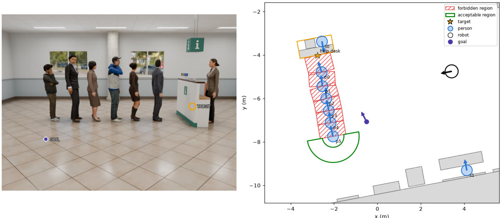
          <figcaption><span class="verdict no"><i class="dot"></i>Pointing: beside the middle of the line</span><br>Map (right): blue circles are the six people waiting, the purple dot is the chosen spot, the green arc is where a polite person stands.</figcaption>
        </figure>
        <figure>
          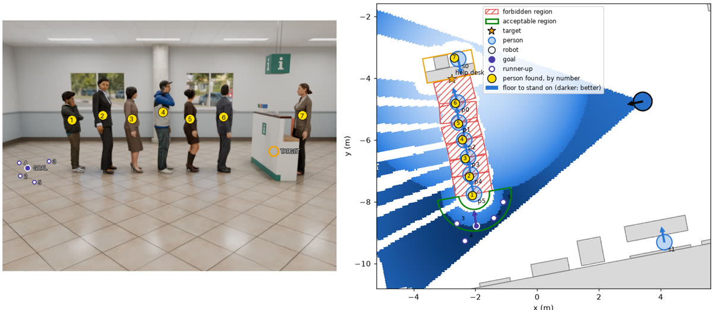
          <figcaption><span class="verdict ok"><i class="dot"></i>Our method: right behind the last person</span><br>Yellow numbers are the people the AI found. It said "come after 1 to 6", and the spot lands in the green arc.</figcaption>
        </figure>
      </div>
      <p class="note">A typical case: pointing failed all 3 tries here; our method succeeded all 3.</p>
    </div>
  </section>

  <section id="still">
    <p class="eyebrow">Result 1 · still scenes</p>
    <h2>Our method picks a good spot more often, on every AI model</h2>
    <p>Realistic 3D scenes of waiting lines, chatting groups and empty places. Every model got the same pictures and requests, 3 tries each. A good spot means the right area, facing the right way.</p>
    <div class="plate">
      <h3>Every AI model, three ways of choosing</h3>
      <div class="legend"><span><i class="base2"></i>Pointing</span><span><i class="base"></i>Pointing, with worked examples in the question</span><span><i class="mine"></i>Our method</span></div>
      <div class="chart-wrap" id="still-bars"><svg class="chart" viewBox="0 0 640 300" role="img" aria-label="Share of good spots per model: pointing, pointing with examples, our method"><line class="grid" x1="44" x2="630" y1="254.0" y2="254.0"/><text class="tick" x="38" y="258.0" text-anchor="end">0%</text><line class="grid" x1="44" x2="630" y1="194.0" y2="194.0"/><text class="tick" x="38" y="198.0" text-anchor="end">25%</text><line class="grid" x1="44" x2="630" y1="134.0" y2="134.0"/><text class="tick" x="38" y="138.0" text-anchor="end">50%</text><line class="grid" x1="44" x2="630" y1="74.0" y2="74.0"/><text class="tick" x="38" y="78.0" text-anchor="end">75%</text><line class="grid" x1="44" x2="630" y1="14.0" y2="14.0"/><text class="tick" x="38" y="18.0" text-anchor="end">100%</text><path class="c-point2" d="M57.8,254.0 V88.5 Q57.8,84.5 61.8,84.5 H75.8 Q79.8,84.5 79.8,88.5 V254.0 Z"><title>Claude Sonnet · Pointing: 178 of 252 (71%)</title></path><path class="c-point" d="M81.8,254.0 V88.5 Q81.8,84.5 85.8,84.5 H99.8 Q103.8,84.5 103.8,88.5 V254.0 Z"><title>Claude Sonnet · Pointing with examples: 178 of 252 (71%)</title></path><path class="c-ours" d="M105.8,254.0 V27.5 Q105.8,23.5 109.8,23.5 H123.8 Q127.8,23.5 127.8,27.5 V254.0 Z"><title>Claude Sonnet · Our method: 242 of 252 (96%)</title></path><text class="val strong" x="116.8" y="17.5" text-anchor="middle">96%</text><text class="lab" x="92.8" y="272" text-anchor="middle">Claude Sonnet</text><path class="c-point2" d="M155.5,254.0 V114.2 Q155.5,110.2 159.5,110.2 H173.5 Q177.5,110.2 177.5,114.2 V254.0 Z"><title>Claude Haiku · Pointing: 151 of 252 (60%)</title></path><path class="c-point" d="M179.5,254.0 V117.0 Q179.5,113.0 183.5,113.0 H197.5 Q201.5,113.0 201.5,117.0 V254.0 Z"><title>Claude Haiku · Pointing with examples: 148 of 252 (59%)</title></path><path class="c-ours" d="M203.5,254.0 V29.4 Q203.5,25.4 207.5,25.4 H221.5 Q225.5,25.4 225.5,29.4 V254.0 Z"><title>Claude Haiku · Our method: 240 of 252 (95%)</title></path><text class="val strong" x="214.5" y="19.4" text-anchor="middle">95%</text><text class="lab" x="190.5" y="272" text-anchor="middle">Claude Haiku</text><path class="c-point2" d="M253.2,254.0 V87.5 Q253.2,83.5 257.2,83.5 H271.2 Q275.2,83.5 275.2,87.5 V254.0 Z"><title>Qwen · Pointing: 179 of 252 (71%)</title></path><path class="c-point" d="M277.2,254.0 V71.3 Q277.2,67.3 281.2,67.3 H295.2 Q299.2,67.3 299.2,71.3 V254.0 Z"><title>Qwen · Pointing with examples: 196 of 252 (78%)</title></path><path class="c-ours" d="M301.2,254.0 V40.9 Q301.2,36.9 305.2,36.9 H319.2 Q323.2,36.9 323.2,40.9 V254.0 Z"><title>Qwen · Our method: 228 of 252 (90%)</title></path><text class="val strong" x="312.2" y="30.9" text-anchor="middle">90%</text><text class="lab" x="288.2" y="272" text-anchor="middle">Qwen</text><path class="c-point2" d="M350.8,254.0 V101.8 Q350.8,97.8 354.8,97.8 H368.8 Q372.8,97.8 372.8,101.8 V254.0 Z"><title>Gemini · Pointing: 164 of 252 (65%)</title></path><path class="c-point" d="M374.8,254.0 V93.2 Q374.8,89.2 378.8,89.2 H392.8 Q396.8,89.2 396.8,93.2 V254.0 Z"><title>Gemini · Pointing with examples: 173 of 252 (69%)</title></path><path class="c-ours" d="M398.8,254.0 V54.2 Q398.8,50.2 402.8,50.2 H416.8 Q420.8,50.2 420.8,54.2 V254.0 Z"><title>Gemini · Our method: 214 of 252 (85%)</title></path><text class="val strong" x="409.8" y="44.2" text-anchor="middle">85%</text><text class="lab" x="385.8" y="272" text-anchor="middle">Gemini</text><path class="c-point2" d="M448.5,254.0 V143.7 Q448.5,139.7 452.5,139.7 H466.5 Q470.5,139.7 470.5,143.7 V254.0 Z"><title>DeepSeek · Pointing: 120 of 252 (48%)</title></path><path class="c-point" d="M472.5,254.0 V138.0 Q472.5,134.0 476.5,134.0 H490.5 Q494.5,134.0 494.5,138.0 V254.0 Z"><title>DeepSeek · Pointing with examples: 126 of 252 (50%)</title></path><path class="c-ours" d="M496.5,254.0 V81.8 Q496.5,77.8 500.5,77.8 H514.5 Q518.5,77.8 518.5,81.8 V254.0 Z"><title>DeepSeek · Our method: 185 of 252 (73%)</title></path><text class="val strong" x="507.5" y="71.8" text-anchor="middle">73%</text><text class="lab" x="483.5" y="272" text-anchor="middle">DeepSeek</text><path class="c-point2" d="M546.2,254.0 V132.3 Q546.2,128.3 550.2,128.3 H564.2 Q568.2,128.3 568.2,132.3 V254.0 Z"><title>GLM · Pointing: 132 of 252 (52%)</title></path><path class="c-point" d="M570.2,254.0 V140.9 Q570.2,136.9 574.2,136.9 H588.2 Q592.2,136.9 592.2,140.9 V254.0 Z"><title>GLM · Pointing with examples: 123 of 252 (49%)</title></path><path class="c-ours" d="M594.2,254.0 V96.1 Q594.2,92.1 598.2,92.1 H612.2 Q616.2,92.1 616.2,96.1 V254.0 Z"><title>GLM · Our method: 170 of 252 (67%)</title></path><text class="val strong" x="605.2" y="86.1" text-anchor="middle">67%</text><text class="lab" x="581.2" y="272" text-anchor="middle">GLM</text><line class="axis" x1="44" x2="630" y1="254" y2="254"/></svg></div>
      <p class="note">Out of 252 tries per model. The biggest gain is at waiting lines, where pointing usually lands beside the line.</p>
    </div>
    <div class="plate" id="why-lines">
      <h3>Why it wins at waiting lines</h3>
      <div class="numbers mini">
        <div class="num"><span class="big">0 of 90</span><span class="what">good spots at lines, on every model, when the robot ignores who is waiting</span></div>
        <div class="num"><span class="big">4 of 6 models</span><span class="what">do as well as the full method when the AI only says who to stand behind</span></div>
      </div>
      <p class="note">So the gain comes from knowing who to stand behind. Two more checks: the AIs tell which way people face correctly 55% (GLM) to 91% (Gemini) of the time, but this never caused a line failure. And results are about the same in simple, staffed and fully realistic versions of the scenes.</p>
    </div>
    <div class="plate" id="fresh">
      <h3>Fresh scenes it had never seen</h3>
      <p>We built the method on 14 scenes. To test it fairly, we made 70 new scenes and ran every model again.</p>
      <div class="heat-wrap"><table class="heatmap"><thead><tr><th></th><th colspan="3">All 70 new scenes (good spots of 280)</th><th class="gap"></th><th colspan="3">Waiting lines only (of 100)</th></tr><tr><th></th><th>Pointing</th><th>With examples</th><th>Ours</th><th class="gap"></th><th>Pointing</th><th>With examples</th><th>Ours</th></tr></thead><tbody><tr><th scope="row">Qwen</th><td class="heat s4" title="191 of 280">191</td><td class="heat s5" title="227 of 280">227</td><td class="heat s6" title="246 of 280">246</td><td class="gap"></td><td class="heat s3" title="52 of 100">52</td><td class="heat s5" title="79 of 100">79</td><td class="heat s6" title="88 of 100">88</td></tr><tr><th scope="row">DeepSeek</th><td class="heat s3" title="141 of 280">141</td><td class="heat s3" title="141 of 280">141</td><td class="heat s5" title="228 of 280">228</td><td class="gap"></td><td class="heat s1" title="19 of 100">19</td><td class="heat s1" title="16 of 100">16</td><td class="heat s5" title="80 of 100">80</td></tr><tr><th scope="row">GLM*</th><td class="heat s3" title="140 of 260">140</td><td class="heat s4" title="159 of 260">159</td><td class="heat s4" title="184 of 260">184</td><td class="gap"></td><td class="heat s3" title="41 of 92">41</td><td class="heat s4" title="54 of 92">54</td><td class="heat s4" title="62 of 92">62</td></tr><tr><th scope="row">Claude Sonnet</th><td class="heat s4" title="198 of 280">198</td><td class="heat s4" title="194 of 280">194</td><td class="heat s6" title="257 of 280">257</td><td class="gap"></td><td class="heat s2" title="33 of 100">33</td><td class="heat s2" title="39 of 100">39</td><td class="heat s5" title="85 of 100">85</td></tr><tr><th scope="row">Claude Haiku</th><td class="heat s3" title="151 of 280">151</td><td class="heat s3" title="156 of 280">156</td><td class="heat s6" title="260 of 280">260</td><td class="gap"></td><td class="heat s0" title="4 of 100">4</td><td class="heat s0" title="11 of 100">11</td><td class="heat s6" title="92 of 100">92</td></tr><tr><th scope="row">Gemini</th><td class="heat s4" title="167 of 280">167</td><td class="heat s4" title="174 of 280">174</td><td class="heat s5" title="237 of 280">237</td><td class="gap"></td><td class="heat s2" title="40 of 100">40</td><td class="heat s3" title="45 of 100">45</td><td class="heat s4" title="71 of 100">71</td></tr></tbody></table></div><div class="heat-key"><span>Darker is better:</span><i class="heat s0">0</i><i class="heat s3">half</i><i class="heat s6">all</i></div>
      <p class="note">Our method beats both pointing versions on every model, by as much as on the original scenes. The gain is in waiting lines: Claude Haiku points to a good spot in 4 of 100 line cases, our method in 92.</p>
      <p class="note">*GLM: 20 answers failed on the school server and are left out, so its counts are out of 260 (92 at waiting lines).</p>
    </div>
    <div class="plate" id="repeats">
      <h3>Are these differences bigger than chance?</h3>
      <p>We ran the test three times on DeepSeek and three times on GLM. Our method stayed ahead of pointing every time: by 65 to 93 good spots (of 252) on DeepSeek and by 24 to 38 on GLM. The repeats themselves differed by at most 34 on DeepSeek and 13 on GLM.</p>
    </div>
    <div class="plate" id="situations">
      <h3>The situations we test</h3>
      <p class="note">Our method's choice on three more situations (all succeeded in every try). The waiting line is shown above; the lift and the photo are in the hidden tests below.</p>
      <div class="gallery">
        <figure>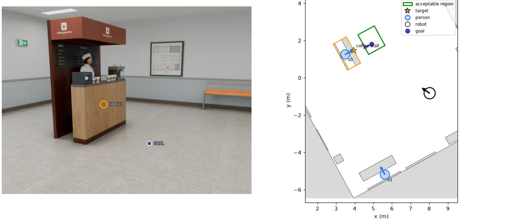<figcaption><b>Nobody around</b><br>"Get me a coffee": go straight to the counter.</figcaption></figure>
        <figure>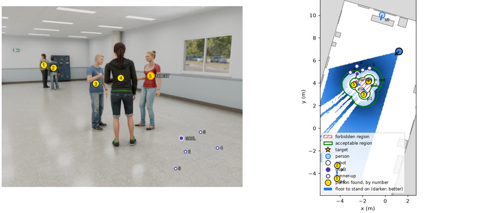<figcaption><b>A chatting group</b><br>"Give this to Sam": stop at the edge of the group, where Sam can see the robot.</figcaption></figure>
        <figure>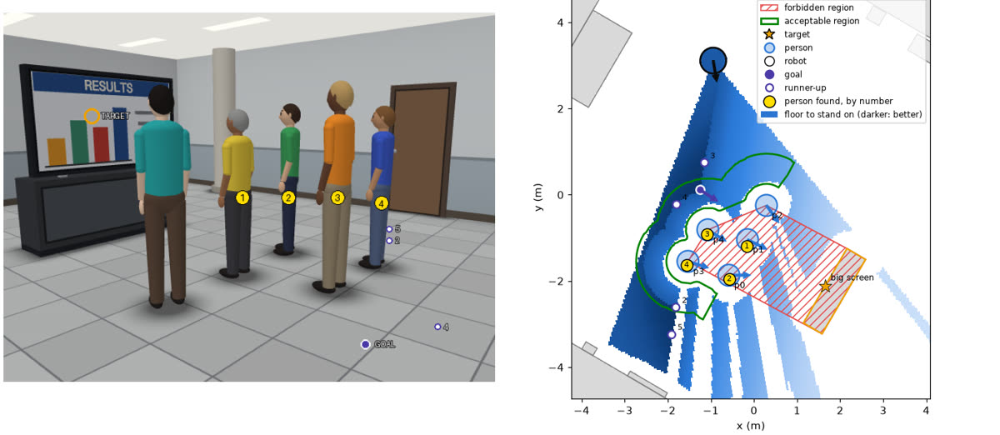<figcaption><b>People watching a screen</b><br>Join beside or behind the audience, out of their view.</figcaption></figure>
      </div>
    </div>
    <div class="plate" id="still-generations">
      <h3>Older and newer AI models</h3>
      <p>Does it only work because today's models are good? The same test on older models. Each row runs from pointing (grey) to our method (colour); a longer line to the right is a bigger gain.</p>
      
      <div class="legend"><span><i class="lg-dot c-point"></i>Pointing (better of its two versions)</span><span><i class="lg-dot c-claude"></i>Our method, Claude</span><span><i class="lg-dot c-gemini"></i>Our method, Gemini</span><span><i class="lg-dot c-school"></i>Our method, school models</span></div><div class="chart-wrap"><svg class="chart" viewBox="0 0 640 422" role="img" aria-label="Pointing against our method, per model, older to newer"><line class="grid" x1="130.0" x2="130.0" y1="22" y2="416"/><text class="tick" x="130.0" y="14" text-anchor="middle">0%</text><line class="grid" x1="244.5" x2="244.5" y1="22" y2="416"/><text class="tick" x="244.5" y="14" text-anchor="middle">25%</text><line class="grid" x1="359.0" x2="359.0" y1="22" y2="416"/><text class="tick" x="359.0" y="14" text-anchor="middle">50%</text><line class="grid" x1="473.5" x2="473.5" y1="22" y2="416"/><text class="tick" x="473.5" y="14" text-anchor="middle">75%</text><line class="grid" x1="588.0" x2="588.0" y1="22" y2="416"/><text class="tick" x="588.0" y="14" text-anchor="middle">100%</text><text class="group" x="4" y="45">Claude</text><text class="lab" x="120" y="68.0" text-anchor="end">Haiku 4.5</text><line class="link-up" x1="177.3" x2="233.6" y1="64.0" y2="64.0"/><circle class="dot c-point" cx="177.3" cy="64.0" r="5"><title>Claude Haiku 4.5 · Pointing (better of its two versions): 26 of 252 (10%)</title></circle><circle class="dot c-claude" cx="233.6" cy="64.0" r="6"><title>Claude Haiku 4.5 · our method: 57 of 252 (23%)</title></circle><text class="val" x="596" y="68.0">23%</text><text class="lab" x="120" y="92.0" text-anchor="end">Sonnet 4.6</text><line class="link-flat" x1="431.7" x2="424.4" y1="88.0" y2="88.0"/><circle class="dot c-point" cx="431.7" cy="88.0" r="5"><title>Claude Sonnet 4.6 · Pointing (better of its two versions): 166 of 252 (66%)</title></circle><circle class="dot c-claude" cx="424.4" cy="88.0" r="6"><title>Claude Sonnet 4.6 · our method: 162 of 252 (64%)</title></circle><text class="val" x="596" y="92.0">64%</text><text class="lab" x="120" y="116.0" text-anchor="end">Sonnet 5</text><line class="link-up" x1="391.7" x2="482.6" y1="112.0" y2="112.0"/><circle class="dot c-point" cx="391.7" cy="112.0" r="5"><title>Claude Sonnet 5 · Pointing (better of its two versions): 144 of 252 (57%)</title></circle><circle class="dot c-claude" cx="482.6" cy="112.0" r="6"><title>Claude Sonnet 5 · our method: 194 of 252 (77%)</title></circle><text class="val" x="596" y="116.0">77%</text><text class="lab" x="120" y="140.0" text-anchor="end">Haiku 5.5</text><line class="link-up" x1="404.4" x2="566.2" y1="136.0" y2="136.0"/><circle class="dot c-point" cx="404.4" cy="136.0" r="5"><title>Claude Haiku 5.5 · Pointing (better of its two versions): 151 of 252 (60%)</title></circle><circle class="dot c-claude" cx="566.2" cy="136.0" r="6"><title>Claude Haiku 5.5 · our method: 240 of 252 (95%)</title></circle><text class="val" x="596" y="140.0">95%</text><text class="lab" x="120" y="164.0" text-anchor="end">Sonnet 5.5</text><line class="link-up" x1="453.5" x2="569.8" y1="160.0" y2="160.0"/><circle class="dot c-point" cx="453.5" cy="160.0" r="5"><title>Claude Sonnet 5.5 · Pointing (better of its two versions): 178 of 252 (71%)</title></circle><circle class="dot c-claude" cx="569.8" cy="160.0" r="6"><title>Claude Sonnet 5.5 · our method: 242 of 252 (96%)</title></circle><text class="val" x="596" y="164.0">96%</text><text class="group" x="4" y="189">Gemini</text><text class="lab" x="120" y="212.0" text-anchor="end">3 Flash</text><line class="link-up" x1="369.9" x2="449.9" y1="208.0" y2="208.0"/><circle class="dot c-point" cx="369.9" cy="208.0" r="5"><title>Gemini 3 Flash · Pointing (better of its two versions): 132 of 252 (52%)</title></circle><circle class="dot c-gemini" cx="449.9" cy="208.0" r="6"><title>Gemini 3 Flash · our method: 176 of 252 (70%)</title></circle><text class="val" x="596" y="212.0">70%</text><text class="lab" x="120" y="236.0" text-anchor="end">3.1 Flash Lite</text><line class="link-up" x1="368.1" x2="542.6" y1="232.0" y2="232.0"/><circle class="dot c-point" cx="368.1" cy="232.0" r="5"><title>Gemini 3.1 Flash Lite · Pointing (better of its two versions): 131 of 252 (52%)</title></circle><circle class="dot c-gemini" cx="542.6" cy="232.0" r="6"><title>Gemini 3.1 Flash Lite · our method: 227 of 252 (90%)</title></circle><text class="val" x="596" y="236.0">90%</text><text class="lab" x="120" y="260.0" text-anchor="end">3.5 Flash Lite</text><line class="link-up" x1="315.4" x2="520.8" y1="256.0" y2="256.0"/><circle class="dot c-point" cx="315.4" cy="256.0" r="5"><title>Gemini 3.5 Flash Lite · Pointing (better of its two versions): 102 of 252 (40%)</title></circle><circle class="dot c-gemini" cx="520.8" cy="256.0" r="6"><title>Gemini 3.5 Flash Lite · our method: 215 of 252 (85%)</title></circle><text class="val" x="596" y="260.0">85%</text><text class="lab" x="120" y="284.0" text-anchor="end">3.6 Flash</text><line class="link-up" x1="388.1" x2="551.7" y1="280.0" y2="280.0"/><circle class="dot c-point" cx="388.1" cy="280.0" r="5"><title>Gemini 3.6 Flash · Pointing (better of its two versions): 142 of 252 (56%)</title></circle><circle class="dot c-gemini" cx="551.7" cy="280.0" r="6"><title>Gemini 3.6 Flash · our method: 232 of 252 (92%)</title></circle><text class="val" x="596" y="284.0">92%</text><text class="lab" x="120" y="308.0" text-anchor="end">3.8 Flash</text><line class="link-up" x1="444.4" x2="518.9" y1="304.0" y2="304.0"/><circle class="dot c-point" cx="444.4" cy="304.0" r="5"><title>Gemini 3.8 Flash · Pointing (better of its two versions): 173 of 252 (69%)</title></circle><circle class="dot c-gemini" cx="518.9" cy="304.0" r="6"><title>Gemini 3.8 Flash · our method: 214 of 252 (85%)</title></circle><text class="val" x="596" y="308.0">85%</text><text class="group" x="4" y="333">School models</text><text class="lab" x="120" y="356.0" text-anchor="end">Qwen</text><line class="link-up" x1="486.2" x2="544.4" y1="352.0" y2="352.0"/><circle class="dot c-point" cx="486.2" cy="352.0" r="5"><title>School models Qwen · Pointing (better of its two versions): 196 of 252 (78%)</title></circle><circle class="dot c-school" cx="544.4" cy="352.0" r="6"><title>School models Qwen · our method: 228 of 252 (90%)</title></circle><text class="val" x="596" y="356.0">90%</text><text class="lab" x="120" y="380.0" text-anchor="end">DeepSeek</text><line class="link-up" x1="359.0" x2="466.2" y1="376.0" y2="376.0"/><circle class="dot c-point" cx="359.0" cy="376.0" r="5"><title>School models DeepSeek · Pointing (better of its two versions): 126 of 252 (50%)</title></circle><circle class="dot c-school" cx="466.2" cy="376.0" r="6"><title>School models DeepSeek · our method: 185 of 252 (73%)</title></circle><text class="val" x="596" y="380.0">73%</text><text class="lab" x="120" y="404.0" text-anchor="end">GLM</text><line class="link-up" x1="369.9" x2="439.0" y1="400.0" y2="400.0"/><circle class="dot c-point" cx="369.9" cy="400.0" r="5"><title>School models GLM · Pointing (better of its two versions): 132 of 252 (52%)</title></circle><circle class="dot c-school" cx="439.0" cy="400.0" r="6"><title>School models GLM · our method: 170 of 252 (67%)</title></circle><text class="val" x="596" y="404.0">67%</text></svg></div>
      <p class="note">Share of 252 tries. Our method lifts every Gemini model well above pointing; three older Gemini models match or beat the newest. It helps little for Claude Sonnet 4.6 and Haiku 4.5: Sonnet 4.6 finds only 71% of the people, and Haiku 4.5 points only roughly. Our method needs the AI to point at people accurately.</p>
    </div>
    <div class="plate" id="still-speed">
      <h3>Speed against accuracy</h3>
      
      <div class="legend"><span><i class="lg-dot c-point"></i>Pointing</span><span><i class="lg-dot c-ours"></i>Our method</span></div><div class="chart-wrap"><svg class="chart" viewBox="0 0 640 320" role="img" aria-label="Seconds per try against share of good spots, pointing and our method"><line class="grid" x1="48.0" x2="48.0" y1="12" y2="280"/><text class="tick" x="48.0" y="296" text-anchor="middle">3 s</text><line class="grid" x1="146.2" x2="146.2" y1="12" y2="280"/><text class="tick" x="146.2" y="296" text-anchor="middle">5 s</text><line class="grid" x1="279.5" x2="279.5" y1="12" y2="280"/><text class="tick" x="279.5" y="296" text-anchor="middle">10 s</text><line class="grid" x1="412.8" x2="412.8" y1="12" y2="280"/><text class="tick" x="412.8" y="296" text-anchor="middle">20 s</text><line class="grid" x1="588.9" x2="588.9" y1="12" y2="280"/><text class="tick" x="588.9" y="296" text-anchor="middle">50 s</text><line class="grid" x1="48" x2="624" y1="280.0" y2="280.0"/><text class="tick" x="42" y="284.0" text-anchor="end">40%</text><line class="grid" x1="48" x2="624" y1="190.7" y2="190.7"/><text class="tick" x="42" y="194.7" text-anchor="end">60%</text><line class="grid" x1="48" x2="624" y1="101.3" y2="101.3"/><text class="tick" x="42" y="105.3" text-anchor="end">80%</text><line class="grid" x1="48" x2="624" y1="12.0" y2="12.0"/><text class="tick" x="42" y="16.0" text-anchor="end">100%</text><text class="tick" x="336.0" y="316" text-anchor="middle">Seconds per try (log scale)</text><defs><marker id="arr" viewBox="0 0 10 10" refX="9" refY="5" markerWidth="7" markerHeight="7" orient="auto-start-reverse"><path d="M0,0 L10,5 L0,10 z" class="arrowhead"/></marker></defs><line class="arrow" x1="134.9" y1="240.8" x2="231.2" y2="136.6" marker-end="url(#arr)"/><circle class="dot c-point" cx="130.2" cy="246.0" r="5"><title>DeepSeek · pointing: 4.6 s, 48% good</title></circle><circle class="dot c-ours" cx="236.6" cy="130.8" r="6"><title>DeepSeek · our method: 8.0 s, 73% good</title></circle><text class="lab" x="140.2" y="250.0" text-anchor="start">DeepSeek</text><line class="arrow" x1="196.7" y1="184.7" x2="266.2" y2="40.5" marker-end="url(#arr)"/><circle class="dot c-point" cx="193.7" cy="191.0" r="5"><title>Claude Haiku · pointing: 6.4 s, 60% good</title></circle><circle class="dot c-ours" cx="269.6" cy="33.3" r="6"><title>Claude Haiku · our method: 9.5 s, 95% good</title></circle><text class="lab" x="259.6" y="37.3" text-anchor="end">Claude Haiku</text><line class="arrow" x1="251.8" y1="137.2" x2="312.0" y2="36.6" marker-end="url(#arr)"/><circle class="dot c-point" cx="248.2" cy="143.2" r="5"><title>Claude Sonnet · pointing: 8.5 s, 71% good</title></circle><circle class="dot c-ours" cx="316.1" cy="29.7" r="6"><title>Claude Sonnet · our method: 12.1 s, 96% good</title></circle><text class="lab" x="326.1" y="33.7" text-anchor="start">Claude Sonnet</text><line class="arrow" x1="232.6" y1="220.9" x2="326.1" y2="161.6" marker-end="url(#arr)"/><circle class="dot c-point" cx="226.7" cy="224.7" r="5"><title>GLM · pointing: 7.6 s, 52% good</title></circle><circle class="dot c-ours" cx="332.9" cy="157.3" r="6"><title>GLM · our method: 13.2 s, 67% good</title></circle><text class="lab" x="342.9" y="161.3" text-anchor="start">GLM</text><line class="arrow" x1="326.1" y1="161.3" x2="349.8" y2="87.0" marker-end="url(#arr)"/><circle class="dot c-point" cx="323.9" cy="168.0" r="5"><title>Gemini · pointing: 12.6 s, 65% good</title></circle><circle class="dot c-ours" cx="352.3" cy="79.4" r="6"><title>Gemini · our method: 14.6 s, 85% good</title></circle><text class="lab" x="362.3" y="83.4" text-anchor="start">Gemini</text><line class="arrow" x1="476.0" y1="137.1" x2="575.2" y2="59.5" marker-end="url(#arr)"/><circle class="dot c-point" cx="470.5" cy="141.4" r="5"><title>Qwen · pointing: 27.0 s, 71% good</title></circle><circle class="dot c-ours" cx="581.5" cy="54.5" r="6"><title>Qwen · our method: 48.1 s, 90% good</title></circle><text class="lab" x="571.5" y="58.5" text-anchor="end">Qwen</text></svg></div>
      <p class="note">Each arrow runs from pointing to our method: up is more good spots, right is slower. Our method asks two extra questions, so it takes a few seconds longer; placing the robot takes under a second.</p>
    </div>
    <div class="plate">
      <h3>Does it work in situations it never saw?</h3>
      <p>Two kinds of scene kept hidden until the end, then run once.</p>
      <div class="heat-wrap"><table class="heatmap"><thead><tr><th></th><th colspan="3">People waiting at a lift</th><th class="gap"></th><th colspan="3">Someone taking a photo (unclear test)</th></tr><tr><th></th><th>Pointing</th><th>With examples</th><th>Ours</th><th class="gap"></th><th>Pointing</th><th>With examples</th><th>Ours</th></tr></thead><tbody><tr><th scope="row">Qwen</th><td class="heat s4" title="21 of 36">21</td><td class="heat s4" title="25 of 36">25</td><td class="heat s6" title="36 of 36">36</td><td class="gap"></td><td class="heat s0" title="2 of 36">2</td><td class="heat s0" title="0 of 36">0</td><td class="heat s0" title="2 of 36">2</td></tr><tr><th scope="row">DeepSeek</th><td class="heat s1" title="8 of 36">8</td><td class="heat s2" title="15 of 36">15</td><td class="heat s6" title="31 of 36">31</td><td class="gap"></td><td class="heat s0" title="1 of 36">1</td><td class="heat s0" title="1 of 36">1</td><td class="heat s0" title="0 of 36">0</td></tr><tr><th scope="row">GLM</th><td class="heat s2" title="11 of 36">11</td><td class="heat s3" title="18 of 36">18</td><td class="heat s5" title="28 of 36">28</td><td class="gap"></td><td class="heat s0" title="0 of 36">0</td><td class="heat s0" title="1 of 36">1</td><td class="heat s0" title="2 of 36">2</td></tr><tr><th scope="row">Claude Sonnet</th><td class="heat s6" title="33 of 36">33</td><td class="heat s6" title="31 of 36">31</td><td class="heat s6" title="36 of 36">36</td><td class="gap"></td><td class="heat s0" title="2 of 36">2</td><td class="heat s0" title="2 of 36">2</td><td class="heat s0" title="4 of 36">4</td></tr><tr><th scope="row">Claude Haiku</th><td class="heat s1" title="7 of 36">7</td><td class="heat s1" title="7 of 36">7</td><td class="heat s6" title="32 of 36">32</td><td class="gap"></td><td class="heat s0" title="0 of 36">0</td><td class="heat s0" title="1 of 36">1</td><td class="heat s1" title="9 of 36">9</td></tr><tr><th scope="row">Gemini</th><td class="heat s2" title="15 of 36">15</td><td class="heat s3" title="20 of 36">20</td><td class="heat s5" title="28 of 36">28</td><td class="gap"></td><td class="heat s1" title="6 of 36">6</td><td class="heat s0" title="3 of 36">3</td><td class="heat s0" title="0 of 36">0</td></tr></tbody></table></div><div class="heat-key"><span>Good spots out of 36:</span><i class="heat s0">0</i><i class="heat s2">10</i><i class="heat s4">20</i><i class="heat s6">36</i></div>
      <p class="note">Darker is better. The lift result holds on every model. The photo test is unclear; see below.</p>
    </div>
    <div class="plate" id="hidden-pictures">
      <h3>What the hidden scenes look like</h3>
      <p class="note">Left: the scene. Right: map from above, with people (blue circles), the good-spot area (green outline), where the robot would be in the way (red hatching) and the AI's spot (purple dot).</p>
      <div class="pair">
        <figure>
          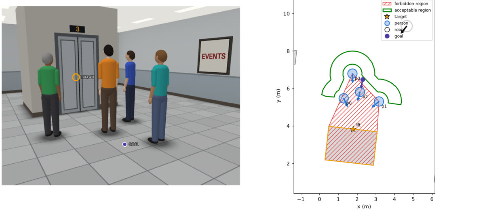
          <figcaption><span class="verdict no"><i class="dot"></i>Lift, pointing: pushes in among the people waiting</span><br>Claude Haiku, "take this up to the fifth floor". Failed all 3 tries.</figcaption>
        </figure>
        <figure>
          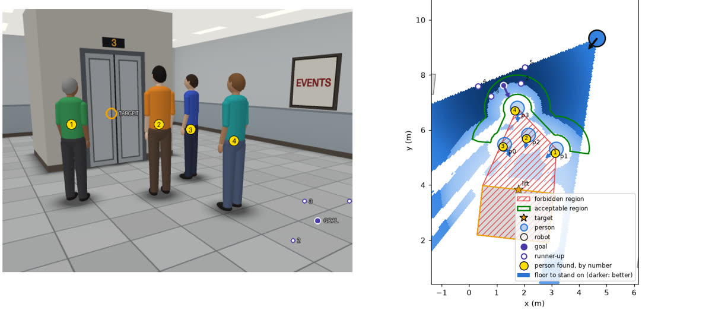
          <figcaption><span class="verdict ok"><i class="dot"></i>Lift, our method: waits behind the group</span><br>Same model and request. Succeeded in 2 of 3 tries.</figcaption>
        </figure>
      </div>
      <div class="pair">
        <figure>
          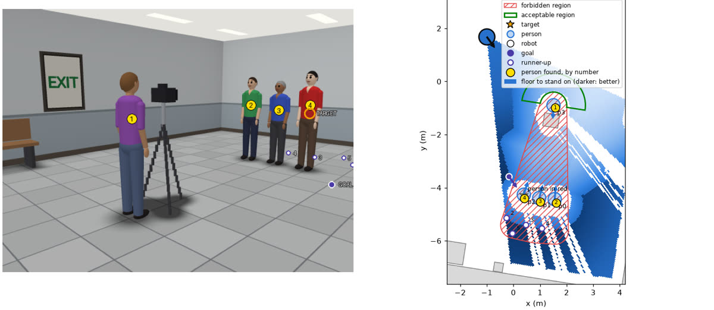
          <figcaption><span class="verdict no"><i class="dot"></i>Photo, the person asked for is posing: counted as a failure</span><br>Claude Sonnet waits beside the group, out of the shot, as many people would. The rule only accepts the small arc behind the photographer, so this counts as a failure. This is why the photo test is unclear.</figcaption>
        </figure>
        <figure>
          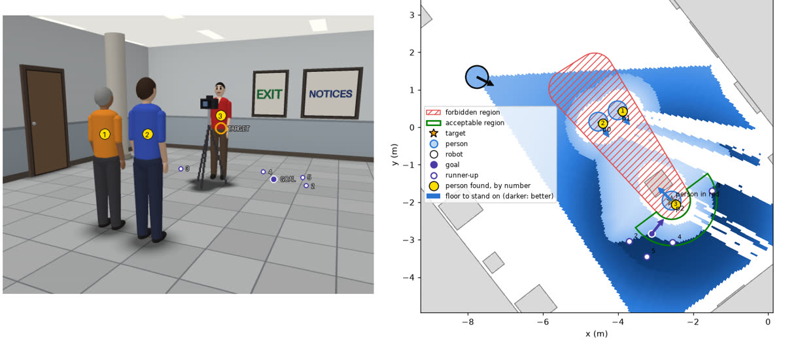
          <figcaption><span class="verdict ok"><i class="dot"></i>Photo, the person asked for takes the photo: success</span><br>The robot waits behind the photographer, out of the shot (2 of 3 tries).</figcaption>
        </figure>
      </div>
    </div>
    <div class="plate" id="new-tests">
      <h3>Two new tests it never saw: a line that bends, and someone using a machine</h3>
      <p>The photo test is unclear, so we added two clearer ones: a line that turns a corner round a pillar (join the end of the second part), and one person using a cash or ticket machine (wait 1-2 m behind them, not over their shoulder or beside them).</p>
      <div class="heat-wrap"><table class="heatmap"><thead><tr><th></th><th colspan="3">A line that bends (of 72)</th><th class="gap"></th><th colspan="3">Someone using a machine (of 72)</th></tr><tr><th></th><th>Pointing</th><th>With examples</th><th>Ours</th><th class="gap"></th><th>Pointing</th><th>With examples</th><th>Ours</th></tr></thead><tbody><tr><th scope="row">Qwen</th><td class="heat s0" title="2 of 72">2</td><td class="heat s0" title="0 of 72">0</td><td class="heat s6" title="63 of 72">63</td><td class="gap"></td><td class="heat s0" title="5 of 72">5</td><td class="heat s0" title="8 of 72">8</td><td class="heat s4" title="49 of 72">49</td></tr><tr><th scope="row">DeepSeek</th><td class="heat s0" title="4 of 72">4</td><td class="heat s0" title="3 of 72">3</td><td class="heat s4" title="49 of 72">49</td><td class="gap"></td><td class="heat s0" title="2 of 72">2</td><td class="heat s0" title="5 of 72">5</td><td class="heat s3" title="31 of 72">31</td></tr><tr><th scope="row">GLM*</th><td class="heat s0" title="1 of 62">1</td><td class="heat s0" title="7 of 62">7</td><td class="heat s3" title="32 of 62">32</td><td class="gap"></td><td class="heat s1" title="18 of 72">18</td><td class="heat s1" title="12 of 72">12</td><td class="heat s1" title="14 of 72">14</td></tr><tr><th scope="row">Claude Sonnet</th><td class="heat s0" title="0 of 72">0</td><td class="heat s0" title="0 of 72">0</td><td class="heat s6" title="66 of 72">66</td><td class="gap"></td><td class="heat s1" title="15 of 72">15</td><td class="heat s3" title="33 of 72">33</td><td class="heat s6" title="66 of 72">66</td></tr><tr><th scope="row">Claude Haiku</th><td class="heat s0" title="0 of 72">0</td><td class="heat s0" title="0 of 72">0</td><td class="heat s3" title="41 of 72">41</td><td class="gap"></td><td class="heat s0" title="0 of 72">0</td><td class="heat s0" title="0 of 72">0</td><td class="heat s4" title="48 of 72">48</td></tr><tr><th scope="row">Gemini</th><td class="heat s0" title="0 of 72">0</td><td class="heat s0" title="0 of 72">0</td><td class="heat s3" title="40 of 72">40</td><td class="gap"></td><td class="heat s1" title="20 of 72">20</td><td class="heat s0" title="4 of 72">4</td><td class="heat s5" title="59 of 72">59</td></tr></tbody></table></div><div class="heat-key"><span>Good spots out of 72:</span><i class="heat s0">0</i><i class="heat s2">20</i><i class="heat s4">41</i><i class="heat s6">72</i></div>
      <p class="note">Over all six models together, our method wins on all 12 scenes in both tests. At the bent line every model wins: pointing almost never finds the end of the line and stops in the corner or beside it. At the machine every model wins except GLM, which got 14 good spots against 18 for pointing. With a looser machine rule (0.8 m instead of 1 m), everyone does better and our method still wins on every model except GLM, which comes out about level.</p>
      <p class="note">*GLM: 10 bent-line answers failed on the school server and are left out, so its bent-line counts are out of 62.</p>
      <div class="pair">
        <figure>
          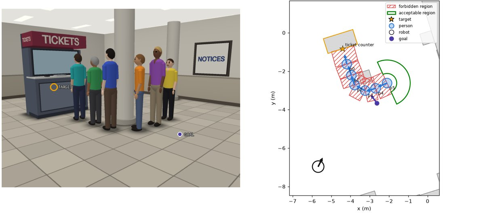
          <figcaption><span class="verdict no"><i class="dot"></i>Bent line, pointing: stops in the corner, beside the middle of the line</span><br>Claude Sonnet, "go to the ticket counter". Failed all 6 tries.</figcaption>
        </figure>
        <figure>
          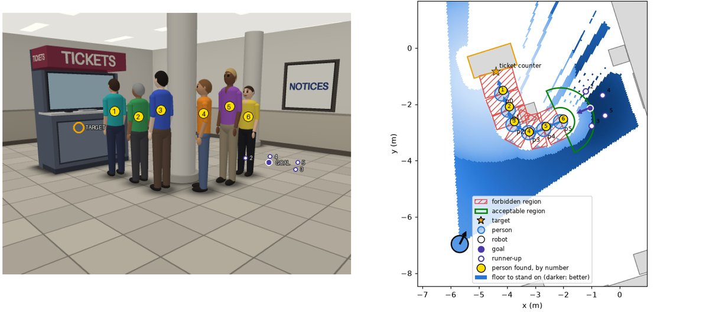
          <figcaption><span class="verdict ok"><i class="dot"></i>Bent line, our method: finds all six people and joins the end</span><br>Same model and request. Succeeded in all 6 tries.</figcaption>
        </figure>
      </div>
      <div class="pair">
        <figure>
          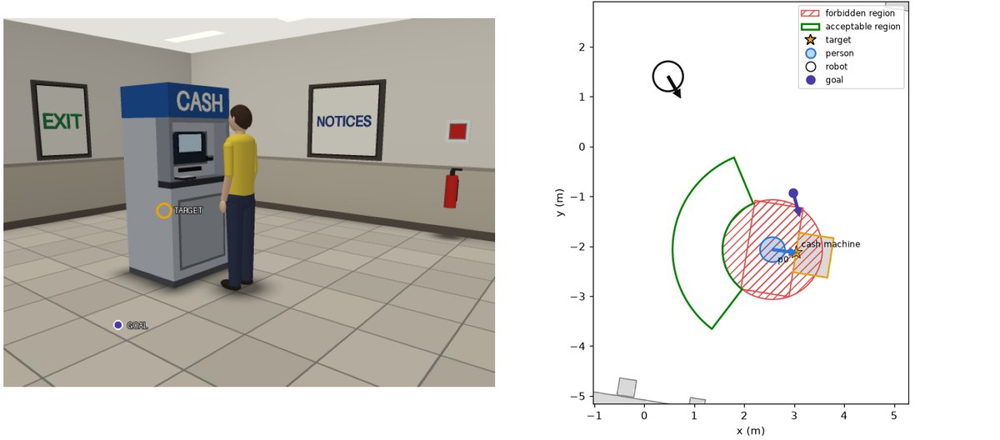
          <figcaption><span class="verdict no"><i class="dot"></i>Cash machine, pointing: walks up beside the person using it</span><br>Claude Sonnet, "go to the cash machine". Failed all 6 tries.</figcaption>
        </figure>
        <figure>
          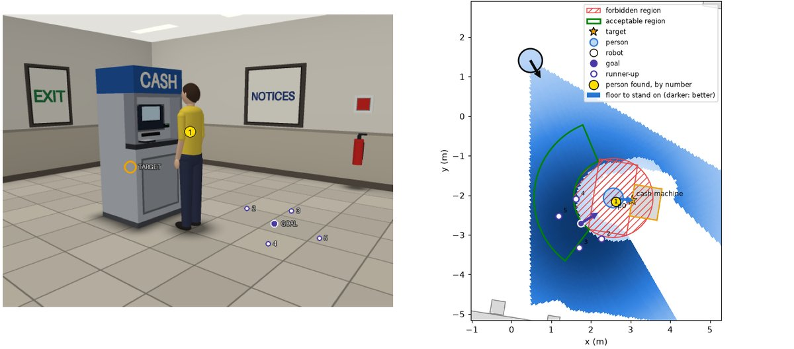
          <figcaption><span class="verdict ok"><i class="dot"></i>Cash machine, our method: waits behind at a polite distance</span><br>Same model and request. Succeeded in all 6 tries.</figcaption>
        </figure>
      </div>
    </div>
  </section>

  <section id="faster">
    <p class="eyebrow">Result 2 · faster</p>
    <h2>Faster, with a small people finder</h2>
    <p>Our method asks the AI who is there. A small people finder (under 0.2 s) can answer that instead. Tested on 40 new scenes with six AI models.</p>
    <div class="numbers">
      <div class="num"><span class="from">Every model</span><span class="big">1 question fewer</span><span class="what">And never less accurate than re-running the current method.</span></div>
      <div class="num"><span class="from">Free school models · whole answer</span><span class="big">16–33 s sooner</span><span class="what">Qwen 107 → 83 s, DeepSeek 66 → 50 s, GLM 142 → 109 s. More often right for Qwen and GLM.</span></div>
      <div class="num"><span class="from">Paid services · whole answer</span><span class="big">2–5 s sooner</span><span class="what">Claude Sonnet 12.9 → 10.2 s, Claude Haiku 9.9 → 7.7 s, Gemini 19.1 → 14.3 s.</span></div>
    </div>
    <div class="plate">
      <div class="legend"><span><i class="lg-dot c-point"></i>Current method</span><span><i class="lg-dot hollow"></i>Current method, run again</span><span><i class="lg-dot c-ours"></i>With the people finder</span></div><div class="chart-wrap"><svg class="chart" viewBox="0 0 560 188" role="img" aria-label="Share of good spots: current method, run again, and with the people finder"><line class="grid" x1="120.0" x2="120.0" y1="20" y2="184"/><text class="tick" x="120.0" y="13" text-anchor="middle">60%</text><line class="grid" x1="218.0" x2="218.0" y1="20" y2="184"/><text class="tick" x="218.0" y="13" text-anchor="middle">70%</text><line class="grid" x1="316.0" x2="316.0" y1="20" y2="184"/><text class="tick" x="316.0" y="13" text-anchor="middle">80%</text><line class="grid" x1="414.0" x2="414.0" y1="20" y2="184"/><text class="tick" x="414.0" y="13" text-anchor="middle">90%</text><line class="grid" x1="512.0" x2="512.0" y1="20" y2="184"/><text class="tick" x="512.0" y="13" text-anchor="middle">100%</text><text class="lab" x="110" y="43.0" text-anchor="end">Qwen</text><line class="link-flat" x1="419.5" x2="481.2" y1="39.0" y2="39.0"/><circle class="dot c-point" cx="419.5" cy="39.0" r="5"><title>Qwen · current method: 144 of 159 (91%)</title></circle><circle class="dot hollow" cx="431.9" cy="39.0" r="5"><title>Qwen · current method, run again: 146 of 159 (92%)</title></circle><circle class="dot c-ours" cx="481.2" cy="39.0" r="6"><title>Qwen · with the people finder: 154 of 159 (97%)</title></circle><text class="val" x="520" y="43.0">97%</text><text class="lab" x="110" y="69.0" text-anchor="end">DeepSeek</text><line class="link-flat" x1="318.5" x2="355.9" y1="65.0" y2="65.0"/><circle class="dot c-point" cx="318.5" cy="65.0" r="5"><title>DeepSeek · current method: 126 of 157 (80%)</title></circle><circle class="dot hollow" cx="349.7" cy="65.0" r="5"><title>DeepSeek · current method, run again: 131 of 157 (83%)</title></circle><circle class="dot c-ours" cx="355.9" cy="65.0" r="6"><title>DeepSeek · with the people finder: 132 of 157 (84%)</title></circle><text class="val" x="520" y="69.0">84%</text><text class="lab" x="110" y="95.0" text-anchor="end">GLM</text><line class="link-flat" x1="169.3" x2="388.6" y1="91.0" y2="91.0"/><circle class="dot c-point" cx="217.3" cy="91.0" r="5"><title>GLM · current method: 100 of 143 (70%)</title></circle><circle class="dot hollow" cx="169.3" cy="91.0" r="5"><title>GLM · current method, run again: 93 of 143 (65%)</title></circle><circle class="dot c-ours" cx="388.6" cy="91.0" r="6"><title>GLM · with the people finder: 125 of 143 (87%)</title></circle><text class="val" x="520" y="95.0">87%</text><text class="lab" x="110" y="121.0" text-anchor="end">Claude Sonnet</text><line class="link-flat" x1="481.4" x2="493.6" y1="117.0" y2="117.0"/><circle class="dot c-point" cx="481.4" cy="117.0" r="5"><title>Claude Sonnet · current method: 155 of 160 (97%)</title></circle><circle class="dot hollow" cx="493.6" cy="117.0" r="5"><title>Claude Sonnet · current method, run again: 157 of 160 (98%)</title></circle><circle class="dot c-ours" cx="481.4" cy="117.0" r="6"><title>Claude Sonnet · with the people finder: 155 of 160 (97%)</title></circle><text class="val" x="520" y="121.0">97%</text><text class="lab" x="110" y="147.0" text-anchor="end">Claude Haiku</text><line class="link-flat" x1="381.7" x2="443.8" y1="143.0" y2="143.0"/><circle class="dot c-point" cx="419.0" cy="143.0" r="5"><title>Claude Haiku · current method: 143 of 158 (91%)</title></circle><circle class="dot hollow" cx="381.7" cy="143.0" r="5"><title>Claude Haiku · current method, run again: 137 of 158 (87%)</title></circle><circle class="dot c-ours" cx="443.8" cy="143.0" r="6"><title>Claude Haiku · with the people finder: 147 of 158 (93%)</title></circle><text class="val" x="520" y="147.0">93%</text><text class="lab" x="110" y="173.0" text-anchor="end">Gemini</text><line class="link-flat" x1="332.1" x2="350.7" y1="169.0" y2="169.0"/><circle class="dot c-point" cx="332.1" cy="169.0" r="5"><title>Gemini · current method: 129 of 158 (82%)</title></circle><circle class="dot hollow" cx="332.1" cy="169.0" r="5"><title>Gemini · current method, run again: 129 of 158 (82%)</title></circle><circle class="dot c-ours" cx="350.7" cy="169.0" r="6"><title>Gemini · with the people finder: 132 of 158 (84%)</title></circle><text class="val" x="520" y="173.0">84%</text></svg></div><div class="grid2 slopes"><div><h4>Seconds per answer, free school models</h4><div class="chart-wrap"><svg class="chart" viewBox="0 0 300 230" role="img" aria-label="Free models: seconds per answer, before and after"><text class="tick" x="108" y="14" text-anchor="middle">Asking the AI</text><text class="tick" x="196" y="14" text-anchor="middle">People finder</text><line class="axis" x1="108" x2="108" y1="24" y2="208"/><line class="axis" x1="196" x2="196" y1="24" y2="208"/><line class="slope" x1="108" y1="76.3" x2="196" y2="105.8"/><circle class="dot c-point" cx="108" cy="76.3" r="4.5"><title>Qwen · asking the AI: 107.4 s</title></circle><circle class="dot c-ours" cx="196" cy="105.8" r="4.5"><title>Qwen · people finder: 83.3 s</title></circle><text class="lab" x="99" y="80.3" text-anchor="end">Qwen 107.4</text><text class="val" x="205" y="109.8">83.3 s</text><line class="slope" x1="108" y1="127.2" x2="196" y2="146.3"/><circle class="dot c-point" cx="108" cy="127.2" r="4.5"><title>DeepSeek · asking the AI: 65.9 s</title></circle><circle class="dot c-ours" cx="196" cy="146.3" r="4.5"><title>DeepSeek · people finder: 50.3 s</title></circle><text class="lab" x="99" y="131.2" text-anchor="end">DeepSeek 65.9</text><text class="val" x="205" y="150.3">50.3 s</text><line class="slope" x1="108" y1="33.4" x2="196" y2="74.0"/><circle class="dot c-point" cx="108" cy="33.4" r="4.5"><title>GLM · asking the AI: 142.3 s</title></circle><circle class="dot c-ours" cx="196" cy="74.0" r="4.5"><title>GLM · people finder: 109.2 s</title></circle><text class="lab" x="99" y="37.4" text-anchor="end">GLM 142.3</text><text class="val" x="205" y="78.0">109.2 s</text></svg></div></div><div><h4>Seconds per answer, paid services</h4><div class="chart-wrap"><svg class="chart" viewBox="0 0 300 230" role="img" aria-label="Paid models: seconds per answer, before and after"><text class="tick" x="108" y="14" text-anchor="middle">Asking the AI</text><text class="tick" x="196" y="14" text-anchor="middle">People finder</text><line class="axis" x1="108" x2="108" y1="24" y2="208"/><line class="axis" x1="196" x2="196" y1="24" y2="208"/><line class="slope" x1="108" y1="89.3" x2="196" y2="114.2"/><circle class="dot c-point" cx="108" cy="89.3" r="4.5"><title>Sonnet · asking the AI: 12.9 s</title></circle><circle class="dot c-ours" cx="196" cy="114.2" r="4.5"><title>Sonnet · people finder: 10.2 s</title></circle><text class="lab" x="99" y="93.3" text-anchor="end">Sonnet 12.9</text><text class="val" x="205" y="118.2">10.2 s</text><line class="slope" x1="108" y1="116.9" x2="196" y2="137.2"/><circle class="dot c-point" cx="108" cy="116.9" r="4.5"><title>Haiku · asking the AI: 9.9 s</title></circle><circle class="dot c-ours" cx="196" cy="137.2" r="4.5"><title>Haiku · people finder: 7.7 s</title></circle><text class="lab" x="99" y="120.9" text-anchor="end">Haiku 9.9</text><text class="val" x="205" y="141.2">7.7 s</text><line class="slope" x1="108" y1="32.3" x2="196" y2="76.4"/><circle class="dot c-point" cx="108" cy="32.3" r="4.5"><title>Gemini · asking the AI: 19.1 s</title></circle><circle class="dot c-ours" cx="196" cy="76.4" r="4.5"><title>Gemini · people finder: 14.3 s</title></circle><text class="lab" x="99" y="36.3" text-anchor="end">Gemini 19.1</text><text class="val" x="205" y="80.4">14.3 s</text></svg></div></div></div>
      <p class="note">Typical time per answer on scenes with people. The two charts use different scales.</p>
      <p class="note">The people finder was never less accurate than re-running the current method, got more right for Qwen and GLM, and was faster on every model. An earlier, simpler finder based on depth found only 89% of people (95% was needed), so we replaced it.</p>
    </div>
  </section>

  <section id="moving">
    <p class="eyebrow">Result 3 · lines that move</p>
    <h2>Keeping its place as the line moves</h2>
    <p>Lines move: the front person is served and everyone steps up. Our robot asks the AI once, then updates its spot as people move. Tested in a 3D simulator with walking people.</p>
    <div class="scorebox">
      <p><b>How it is scored: time in the right spot.</b> Each run lasts 92 seconds. Every second we check whether the robot is in the right spot: about a metre behind the last person waiting, on the line and facing the front, or at the counter once it is first. The score is the share of seconds it passes.</p>
      <p>The run does not stop when the robot joins the line. People are served, walk off and come back to the end, and the robot has to keep its place. It starts away from the line and has to walk there, so no robot can score 100%.</p>
    </div>
    <div class="plate" id="sim-snapshot">
      <h3>First: one decision from a snapshot</h3>
      <p class="note">One decision from the robot's first picture: good spots out of 30 (10 scenes, 3 tries each). Three more scenes were left out because the end of the line was outside the robot's view at the start.</p>
      <div class="legend"><span><i class="lg-dot c-point"></i>Pointing</span><span><i class="lg-dot c-ours"></i>Our method</span></div>
      <div class="chart-wrap"><svg class="chart" viewBox="0 0 640 300" role="img" aria-label="Good spots out of 30 from one snapshot, pointing against our method, per model, with time per answer"><line class="grid" x1="56" x2="632" y1="222.0" y2="222.0"/><text class="tick" x="48.0" y="226.0" text-anchor="end">0</text><line class="grid" x1="56" x2="632" y1="158.0" y2="158.0"/><text class="tick" x="48.0" y="162.0" text-anchor="end">10</text><line class="grid" x1="56" x2="632" y1="94.0" y2="94.0"/><text class="tick" x="48.0" y="98.0" text-anchor="end">20</text><line class="grid" x1="56" x2="632" y1="30.0" y2="30.0"/><text class="tick" x="48.0" y="34.0" text-anchor="end">30</text><line class="link-up" x1="97.1" x2="97.1" y1="138.8" y2="42.8"/><circle class="dot c-point" cx="97.1" cy="138.8" r="6"><title>Qwen 3.8 · pointing: 13 of 30</title></circle><circle class="dot c-ours" cx="97.1" cy="42.8" r="7"><title>Qwen 3.8 · our method: 28 of 30</title></circle><text class="val" x="97.1" y="30.8" text-anchor="middle">28</text><text class="tick" x="97.1" y="159.8" text-anchor="middle">13</text><text class="lab" x="97.1" y="244.0" text-anchor="middle">Qwen 3.8</text><text class="tick small" x="97.1" y="280.0" text-anchor="middle">60 s</text><line class="link-up" x1="179.4" x2="179.4" y1="132.4" y2="55.6"/><circle class="dot c-point" cx="179.4" cy="132.4" r="6"><title>Qwen 3.8 Flash Next · pointing: 14 of 30</title></circle><circle class="dot c-ours" cx="179.4" cy="55.6" r="7"><title>Qwen 3.8 Flash Next · our method: 26 of 30</title></circle><text class="val" x="179.4" y="43.6" text-anchor="middle">26</text><text class="tick" x="179.4" y="153.4" text-anchor="middle">14</text><text class="lab" x="179.4" y="244.0" text-anchor="middle">Qwen 3.8</text><text class="lab" x="179.4" y="259.0" text-anchor="middle">Flash Next</text><text class="tick small" x="179.4" y="280.0" text-anchor="middle">32 s</text><line class="link-up" x1="261.7" x2="261.7" y1="138.8" y2="55.6"/><circle class="dot c-point" cx="261.7" cy="138.8" r="6"><title>Claude Sonnet 5.5 · pointing: 13 of 30</title></circle><circle class="dot c-ours" cx="261.7" cy="55.6" r="7"><title>Claude Sonnet 5.5 · our method: 26 of 30</title></circle><text class="val" x="261.7" y="43.6" text-anchor="middle">26</text><text class="tick" x="261.7" y="159.8" text-anchor="middle">13</text><text class="lab" x="261.7" y="244.0" text-anchor="middle">Claude</text><text class="lab" x="261.7" y="259.0" text-anchor="middle">Sonnet 5.5</text><text class="tick small" x="261.7" y="280.0" text-anchor="middle">15 s</text><line class="link-up" x1="344.0" x2="344.0" y1="183.6" y2="55.6"/><circle class="dot c-point" cx="344.0" cy="183.6" r="6"><title>Claude Haiku 5.5 · pointing: 6 of 30</title></circle><circle class="dot c-ours" cx="344.0" cy="55.6" r="7"><title>Claude Haiku 5.5 · our method: 26 of 30</title></circle><text class="val" x="344.0" y="43.6" text-anchor="middle">26</text><text class="tick" x="344.0" y="204.6" text-anchor="middle">6</text><text class="lab" x="344.0" y="244.0" text-anchor="middle">Claude</text><text class="lab" x="344.0" y="259.0" text-anchor="middle">Haiku 5.5</text><text class="tick small" x="344.0" y="280.0" text-anchor="middle">11 s</text><line class="link-up" x1="426.3" x2="426.3" y1="183.6" y2="81.2"/><circle class="dot c-point" cx="426.3" cy="183.6" r="6"><title>DeepSeek · pointing: 6 of 30</title></circle><circle class="dot c-ours" cx="426.3" cy="81.2" r="7"><title>DeepSeek · our method: 22 of 30</title></circle><text class="val" x="426.3" y="69.2" text-anchor="middle">22</text><text class="tick" x="426.3" y="204.6" text-anchor="middle">6</text><text class="lab" x="426.3" y="244.0" text-anchor="middle">DeepSeek</text><text class="tick small" x="426.3" y="280.0" text-anchor="middle">10 s</text><line class="link-up" x1="508.6" x2="508.6" y1="94.0" y2="81.2"/><circle class="dot c-point" cx="508.6" cy="94.0" r="6"><title>Gemini 3.8 · pointing: 20 of 30</title></circle><circle class="dot c-ours" cx="508.6" cy="81.2" r="7"><title>Gemini 3.8 · our method: 22 of 30</title></circle><text class="val" x="508.6" y="69.2" text-anchor="middle">22</text><text class="tick" x="508.6" y="115.0" text-anchor="middle">20</text><text class="lab" x="508.6" y="244.0" text-anchor="middle">Gemini 3.8</text><text class="tick small" x="508.6" y="280.0" text-anchor="middle">20 s</text><line class="link-up" x1="590.9" x2="590.9" y1="170.8" y2="94.0"/><circle class="dot c-point" cx="590.9" cy="170.8" r="6"><title>GLM · pointing: 8 of 30</title></circle><circle class="dot c-ours" cx="590.9" cy="94.0" r="7"><title>GLM · our method: 20 of 30</title></circle><text class="val" x="590.9" y="82.0" text-anchor="middle">20</text><text class="tick" x="590.9" y="191.8" text-anchor="middle">8</text><text class="lab" x="590.9" y="244.0" text-anchor="middle">GLM</text><text class="tick small" x="590.9" y="280.0" text-anchor="middle">9 s</text><text class="tick small" x="8.0" y="280.0" text-anchor="start">per answer</text></svg></div>
      <p class="note">Every model did better with our method. Qwen 3.8 was most accurate but slowest; Claude Haiku was accurate and fast.</p>
    </div>

    <div class="plate">
      <figure>
        <video src="moving_compare.mp4" poster="moving_poster.jpg" controls muted playsinline loop preload="metadata" width="960" height="824"></video>
        <figcaption><b>Top: decide once by pointing. Bottom: our robot, updating.</b> Left: scene camera. Right: map, with people in line (red), people walking around (green), the robot (blue) and the counter (pink cross). The badge shows when the robot is in the right spot: 18 seconds for ours, never for pointing. Three times normal speed. A typical run (DeepSeek): the one closest to the average improvement. At 63 s the last person ahead is served and the robot is first. It heads for where the AI thought the counter serves, about a metre to one side, backs round people walking past (the simulated people do not step around the robot), and waits beside the counter for the rest of the run. This front-of-line mistake is the biggest remaining loss (see below).</figcaption>
      </figure>
    </div>
    <div class="plate">
      <h3>Share of time in the right spot, every way we tried it</h3>
      
      <div class="legend"><span><i class="lg-dot c-s1"></i>Claude Sonnet</span><span><i class="lg-dot c-s2"></i>DeepSeek</span><span><i class="lg-dot c-s3"></i>Claude Haiku</span><span><i class="lg-dot c-s4"></i>Gemini</span></div><div class="chart-wrap"><svg class="chart" viewBox="0 0 660 300" role="img" aria-label="Share of time in the right spot, by version, per model"><line class="grid" x1="44" x2="500" y1="248.0" y2="248.0"/><text class="tick" x="38" y="252.0" text-anchor="end">0%</text><line class="grid" x1="44" x2="500" y1="181.1" y2="181.1"/><text class="tick" x="38" y="185.1" text-anchor="end">10%</text><line class="grid" x1="44" x2="500" y1="114.3" y2="114.3"/><text class="tick" x="38" y="118.3" text-anchor="end">20%</text><line class="grid" x1="44" x2="500" y1="47.4" y2="47.4"/><text class="tick" x="38" y="51.4" text-anchor="end">30%</text><text class="tick" x="44.0" y="266" text-anchor="middle">Decide once,</text><text class="tick" x="44.0" y="280" text-anchor="middle">our method</text><text class="tick" x="196.0" y="266" text-anchor="middle">Decide once,</text><text class="tick" x="196.0" y="280" text-anchor="middle">pointing</text><text class="tick" x="348.0" y="266" text-anchor="middle">Keep updating,</text><text class="tick" x="348.0" y="280" text-anchor="middle">first version</text><text class="tick" x="500.0" y="266" text-anchor="middle">Keep updating,</text><text class="tick" x="500.0" y="280" text-anchor="middle">improved</text><polyline class="series c-s1" points="44.0,234.6 196.0,227.9 348.0,100.9 500.0,40.7"/><circle class="dot c-s1" cx="44.0" cy="234.6" r="4.5"><title>Claude Sonnet · decide once, our method: 2%</title></circle><circle class="dot c-s1" cx="196.0" cy="227.9" r="4.5"><title>Claude Sonnet · decide once, pointing: 3%</title></circle><circle class="dot c-s1" cx="348.0" cy="100.9" r="4.5"><title>Claude Sonnet · keep updating, first version: 22%</title></circle><circle class="dot c-s1" cx="500.0" cy="40.7" r="4.5"><title>Claude Sonnet · keep updating, improved: 31%</title></circle><polyline class="series c-s2" points="196.0,221.3 348.0,114.3 500.0,67.5"/><circle class="dot c-s2" cx="196.0" cy="221.3" r="4.5"><title>DeepSeek · decide once, pointing: 4%</title></circle><circle class="dot c-s2" cx="348.0" cy="114.3" r="4.5"><title>DeepSeek · keep updating, first version: 20%</title></circle><circle class="dot c-s2" cx="500.0" cy="67.5" r="4.5"><title>DeepSeek · keep updating, improved: 27%</title></circle><polyline class="series c-s3" points="44.0,241.3 196.0,241.3 348.0,141.0 500.0,47.4"/><circle class="dot c-s3" cx="44.0" cy="241.3" r="4.5"><title>Claude Haiku · decide once, our method: 1%</title></circle><circle class="dot c-s3" cx="196.0" cy="241.3" r="4.5"><title>Claude Haiku · decide once, pointing: 1%</title></circle><circle class="dot c-s3" cx="348.0" cy="141.0" r="4.5"><title>Claude Haiku · keep updating, first version: 16%</title></circle><circle class="dot c-s3" cx="500.0" cy="47.4" r="4.5"><title>Claude Haiku · keep updating, improved: 30%</title></circle><polyline class="series c-s4" points="44.0,241.3 196.0,187.8 348.0,147.7 500.0,107.6"/><circle class="dot c-s4" cx="44.0" cy="241.3" r="4.5"><title>Gemini · decide once, our method: 1%</title></circle><circle class="dot c-s4" cx="196.0" cy="187.8" r="4.5"><title>Gemini · decide once, pointing: 9%</title></circle><circle class="dot c-s4" cx="348.0" cy="147.7" r="4.5"><title>Gemini · keep updating, first version: 15%</title></circle><circle class="dot c-s4" cx="500.0" cy="107.6" r="4.5"><title>Gemini · keep updating, improved: 21%</title></circle><text class="lab" x="510" y="44.7">Claude Sonnet 31%</text><text class="lab" x="510" y="58.7">Claude Haiku 30%</text><text class="lab" x="510" y="72.7">DeepSeek 27%</text><text class="lab" x="510" y="111.6">Gemini 21%</text></svg></div>
      <p class="note"><b>Decide once:</b> ask the AI once and walk to that spot. <b>Keep updating:</b> ask once, then follow those people and move up as they do. Deciding once fails either way: the line moves away from the spot. Most of the improvement comes from one rule: only ever step forward. Giving the robot a floor map made no difference.</p>
    </div>
        <div class="plate" id="moving-models">
      <h3>Updating beats deciding once, on 11 of 13 AI models</h3>
      <p>Time in the right spot, 25 runs per model: deciding once by pointing (grey) against updating (colour).</p>
      <div class="legend"><span><i class="lg-dot c-point"></i>Decide once, pointing</span><span><i class="lg-dot c-claude"></i>Keep updating, Claude</span><span><i class="lg-dot c-gemini"></i>Keep updating, Gemini</span><span><i class="lg-dot c-school"></i>Keep updating, school models</span></div>
      <div class="chart-wrap"><svg class="chart" viewBox="0 0 640 422" role="img" aria-label="Share of time in the right spot: decide once by pointing against keep updating, per model"><line class="grid" x1="130.0" x2="130.0" y1="22" y2="416"/><text class="tick" x="130.0" y="14" text-anchor="middle">0%</text><line class="grid" x1="220.0" x2="220.0" y1="22" y2="416"/><text class="tick" x="220.0" y="14" text-anchor="middle">10%</text><line class="grid" x1="310.0" x2="310.0" y1="22" y2="416"/><text class="tick" x="310.0" y="14" text-anchor="middle">20%</text><line class="grid" x1="400.0" x2="400.0" y1="22" y2="416"/><text class="tick" x="400.0" y="14" text-anchor="middle">30%</text><line class="grid" x1="490.0" x2="490.0" y1="22" y2="416"/><text class="tick" x="490.0" y="14" text-anchor="middle">40%</text><line class="grid" x1="580.0" x2="580.0" y1="22" y2="416"/><text class="tick" x="580.0" y="14" text-anchor="middle">50%</text><text class="group" x="4" y="45">Claude</text><text class="lab" x="120" y="68.0" text-anchor="end">Haiku 4.5</text><line class="link-flat" x1="139.0" x2="157.0" y1="64.0" y2="64.0"/><circle class="dot c-point" cx="139.0" cy="64.0" r="5"><title>Claude Haiku 4.5 · decide once by pointing: 1%</title></circle><circle class="dot c-claude" cx="157.0" cy="64.0" r="6"><title>Claude Haiku 4.5 · keep updating: 3%</title></circle><text class="val" x="588" y="68.0">3%</text><text class="lab" x="120" y="92.0" text-anchor="end">Sonnet 4.6</text><line class="link-up" x1="157.0" x2="355.0" y1="88.0" y2="88.0"/><circle class="dot c-point" cx="157.0" cy="88.0" r="5"><title>Claude Sonnet 4.6 · decide once by pointing: 3%</title></circle><circle class="dot c-claude" cx="355.0" cy="88.0" r="6"><title>Claude Sonnet 4.6 · keep updating: 25%</title></circle><text class="val" x="588" y="92.0">25%</text><text class="lab" x="120" y="116.0" text-anchor="end">Sonnet 5</text><line class="link-up" x1="148.0" x2="364.0" y1="112.0" y2="112.0"/><circle class="dot c-point" cx="148.0" cy="112.0" r="5"><title>Claude Sonnet 5 · decide once by pointing: 2%</title></circle><circle class="dot c-claude" cx="364.0" cy="112.0" r="6"><title>Claude Sonnet 5 · keep updating: 26%</title></circle><text class="val" x="588" y="116.0">26%</text><text class="lab" x="120" y="140.0" text-anchor="end">Haiku 5.5</text><line class="link-up" x1="139.0" x2="400.0" y1="136.0" y2="136.0"/><circle class="dot c-point" cx="139.0" cy="136.0" r="5"><title>Claude Haiku 5.5 · decide once by pointing: 1%</title></circle><circle class="dot c-claude" cx="400.0" cy="136.0" r="6"><title>Claude Haiku 5.5 · keep updating: 30%</title></circle><text class="val" x="588" y="140.0">30%</text><text class="lab" x="120" y="164.0" text-anchor="end">Sonnet 5.5</text><line class="link-up" x1="184.0" x2="391.0" y1="160.0" y2="160.0"/><circle class="dot c-point" cx="184.0" cy="160.0" r="5"><title>Claude Sonnet 5.5 · decide once by pointing: 6%</title></circle><circle class="dot c-claude" cx="391.0" cy="160.0" r="6"><title>Claude Sonnet 5.5 · keep updating: 29%</title></circle><text class="val" x="588" y="164.0">29%</text><text class="group" x="4" y="189">Gemini</text><text class="lab" x="120" y="212.0" text-anchor="end">3 Flash</text><line class="link-up" x1="238.0" x2="310.0" y1="208.0" y2="208.0"/><circle class="dot c-point" cx="238.0" cy="208.0" r="5"><title>Gemini 3 Flash · decide once by pointing: 12%</title></circle><circle class="dot c-gemini" cx="310.0" cy="208.0" r="6"><title>Gemini 3 Flash · keep updating: 20%</title></circle><text class="val" x="588" y="212.0">20%</text><text class="lab" x="120" y="236.0" text-anchor="end">3.1 Flash Lite</text><line class="link-up" x1="202.0" x2="481.0" y1="232.0" y2="232.0"/><circle class="dot c-point" cx="202.0" cy="232.0" r="5"><title>Gemini 3.1 Flash Lite · decide once by pointing: 8%</title></circle><circle class="dot c-gemini" cx="481.0" cy="232.0" r="6"><title>Gemini 3.1 Flash Lite · keep updating: 39%</title></circle><text class="val" x="588" y="236.0">39%</text><text class="lab" x="120" y="260.0" text-anchor="end">3.5 Flash Lite</text><line class="link-up" x1="211.0" x2="499.0" y1="256.0" y2="256.0"/><circle class="dot c-point" cx="211.0" cy="256.0" r="5"><title>Gemini 3.5 Flash Lite · decide once by pointing: 9%</title></circle><circle class="dot c-gemini" cx="499.0" cy="256.0" r="6"><title>Gemini 3.5 Flash Lite · keep updating: 41%</title></circle><text class="val" x="588" y="260.0">41%</text><text class="lab" x="120" y="284.0" text-anchor="end">3.6 Flash</text><line class="link-up" x1="238.0" x2="427.0" y1="280.0" y2="280.0"/><circle class="dot c-point" cx="238.0" cy="280.0" r="5"><title>Gemini 3.6 Flash · decide once by pointing: 12%</title></circle><circle class="dot c-gemini" cx="427.0" cy="280.0" r="6"><title>Gemini 3.6 Flash · keep updating: 33%</title></circle><text class="val" x="588" y="284.0">33%</text><text class="lab" x="120" y="308.0" text-anchor="end">3.8 Flash</text><line class="link-up" x1="211.0" x2="319.0" y1="304.0" y2="304.0"/><circle class="dot c-point" cx="211.0" cy="304.0" r="5"><title>Gemini 3.8 Flash · decide once by pointing: 9%</title></circle><circle class="dot c-gemini" cx="319.0" cy="304.0" r="6"><title>Gemini 3.8 Flash · keep updating: 21%</title></circle><text class="val" x="588" y="308.0">21%</text><text class="group" x="4" y="333">School models</text><text class="lab" x="120" y="356.0" text-anchor="end">DeepSeek</text><line class="link-up" x1="166.0" x2="373.0" y1="352.0" y2="352.0"/><circle class="dot c-point" cx="166.0" cy="352.0" r="5"><title>School models DeepSeek · decide once by pointing: 4%</title></circle><circle class="dot c-school" cx="373.0" cy="352.0" r="6"><title>School models DeepSeek · keep updating: 27%</title></circle><text class="val" x="588" y="356.0">27%</text><text class="lab" x="120" y="380.0" text-anchor="end">Qwen*</text><line class="link-up" x1="166.0" x2="247.0" y1="376.0" y2="376.0"/><circle class="dot c-point" cx="166.0" cy="376.0" r="5"><title>School models Qwen* · decide once by pointing: 4%</title></circle><circle class="dot c-school" cx="247.0" cy="376.0" r="6"><title>School models Qwen* · keep updating: 13%</title></circle><text class="val" x="588" y="380.0">13%</text><text class="lab" x="120" y="404.0" text-anchor="end">GLM*</text><text class="tick" x="136.0" y="404.0">too slow: no answer in time</text></svg></div>
      <p class="note">Not on Claude Haiku 4.5 (10 of 25 answers unusable) or Gemini 3 Flash. *Qwen and GLM answer too slowly for a 92-second run (see below); Qwen is shown with 240 seconds per run. Claude Sonnet 5.5 had 50 runs in the chart above (31%); here it uses the same 25 as every model (29%).</p>
    </div>
    <div class="plate" id="moving-reask">
      <h3>Updating beats asking the AI again and again</h3>
      <p>Instead of updating the spot itself, the robot could ask the AI again after every answer, or every 10 seconds. Updating kept it in line longer, with far fewer questions.</p>
      <div class="legend"><span><i class="lg-dot c-s1"></i>Claude Sonnet</span><span><i class="lg-dot c-s2"></i>DeepSeek</span></div>
      <div class="chart-wrap"><svg class="chart" viewBox="0 0 640 300" role="img" aria-label="Time in the right spot against AI questions per run, for updating and two ways of re-asking"><line class="grid" x1="74" x2="612" y1="246.0" y2="246.0"/><text class="tick" x="66.0" y="250.0" text-anchor="end">0%</text><line class="grid" x1="74" x2="612" y1="183.1" y2="183.1"/><text class="tick" x="66.0" y="187.1" text-anchor="end">10%</text><line class="grid" x1="74" x2="612" y1="120.3" y2="120.3"/><text class="tick" x="66.0" y="124.3" text-anchor="end">20%</text><line class="grid" x1="74" x2="612" y1="57.4" y2="57.4"/><text class="tick" x="66.0" y="61.4" text-anchor="end">30%</text><text class="tick" x="74.0" y="264.0" text-anchor="middle">0</text><text class="tick" x="253.3" y="264.0" text-anchor="middle">10</text><text class="tick" x="432.7" y="264.0" text-anchor="middle">20</text><text class="tick" x="612.0" y="264.0" text-anchor="middle">30</text><text class="tick" x="343.0" y="286.0" text-anchor="middle">AI questions per run</text><text class="tick" x="18.0" y="136.0" text-anchor="middle" transform="rotate(-90 18 136.0)">time in the right spot</text><circle class="dot c-s1" cx="145.7" cy="42.3" r="7.5"><title>Claude Sonnet · updating: 4 questions, 32% of the time in the right spot</title></circle><text class="lab" x="157.7" y="46.3" text-anchor="start">Claude Sonnet, updating</text><circle class="dot c-s1" cx="475.7" cy="185.7" r="5.5"><title>Claude Sonnet · every 10 s: 22.4 questions, 10% of the time in the right spot</title></circle><text class="tick" x="486.7" y="189.7" text-anchor="start">re-asking every 10 s</text><circle class="dot c-s1" cx="594.1" cy="234.7" r="5.5"><title>Claude Sonnet · after each answer: 29 questions, 2% of the time in the right spot</title></circle><text class="tick" x="600.1" y="222.7" text-anchor="end">re-asking after each answer</text><circle class="dot c-s2" cx="142.1" cy="71.9" r="7.5"><title>DeepSeek · updating: 3.8 questions, 28% of the time in the right spot</title></circle><text class="lab" x="154.1" y="75.9" text-anchor="start">DeepSeek, updating</text><circle class="dot c-s2" cx="239.0" cy="210.2" r="5.5"><title>DeepSeek · every 10 s: 9.2 questions, 6% of the time in the right spot</title></circle><text class="tick" x="250.0" y="214.2" text-anchor="start">re-asking every 10 s</text><circle class="dot c-s2" cx="346.6" cy="181.3" r="5.5"><title>DeepSeek · after each answer: 15.2 questions, 10% of the time in the right spot</title></circle><text class="tick" x="338.6" y="169.3" text-anchor="end">re-asking after each answer</text></svg></div>
      <p class="note">Each dot is one way of running the robot, 25 runs each. Top left is best: more time in the right spot, fewer questions. Updating asked the AI about 4 times per run; re-asking asked 9 to 29 times and stayed in line far less.</p>
    </div>
    <div class="plate" id="moving-roles">
      <h3>Who to stand behind matters</h3>
      <p>A simpler robot remembers only the AI's marked spot and follows the person standing there. That person is usually served and walks away, and the robot follows them out of the line (117 of 140 runs).</p>
      <div class="legend"><span><i class="lg-dot c-s1"></i>Claude Sonnet</span><span><i class="lg-dot c-s2"></i>DeepSeek</span><span><i class="lg-dot c-s3"></i>Claude Haiku</span><span><i class="lg-dot c-s4"></i>Gemini</span></div>
      <div class="chart-wrap"><svg class="chart" viewBox="0 0 640 250" role="img" aria-label="Time in the right spot: following the marked spot against remembering who to stand behind, per model"><line class="grid" x1="210" x2="210" y1="36" y2="242"/><line class="grid" x1="430" x2="430" y1="36" y2="242"/><text class="lab" x="210.0" y="20.0" text-anchor="middle">Follows the marked spot</text><text class="lab" x="430.0" y="20.0" text-anchor="middle">Remembers who to stand behind</text><polyline class="series c-s1" points="210,214.1 430,60.5"/><circle class="dot c-s1" cx="210" cy="214.1" r="5"><title>Claude Sonnet · follows the marked spot: 4%</title></circle><circle class="dot c-s1" cx="430" cy="60.5" r="5"><title>Claude Sonnet · remembers who to stand behind: 32%</title></circle><polyline class="series c-s2" points="210,197.6 430,82.4"/><circle class="dot c-s2" cx="210" cy="197.6" r="5"><title>DeepSeek · follows the marked spot: 7%</title></circle><circle class="dot c-s2" cx="430" cy="82.4" r="5"><title>DeepSeek · remembers who to stand behind: 28%</title></circle><polyline class="series c-s3" points="210,197.6 430,60.5"/><circle class="dot c-s3" cx="210" cy="197.6" r="5"><title>Claude Haiku · follows the marked spot: 7%</title></circle><circle class="dot c-s3" cx="430" cy="60.5" r="5"><title>Claude Haiku · remembers who to stand behind: 32%</title></circle><polyline class="series c-s4" points="210,93.4 430,115.3"/><circle class="dot c-s4" cx="210" cy="93.4" r="5"><title>Gemini · follows the marked spot: 26%</title></circle><circle class="dot c-s4" cx="430" cy="115.3" r="5"><title>Gemini · remembers who to stand behind: 22%</title></circle><text class="lab" x="198.0" y="97.4" text-anchor="end">Gemini 26%</text><text class="lab" x="198.0" y="201.6" text-anchor="end">DeepSeek, Haiku 7%</text><text class="lab" x="198.0" y="225.1" text-anchor="end">Sonnet 4%</text><text class="lab" x="442.0" y="64.5" text-anchor="start">32% Sonnet, Haiku</text><text class="lab" x="442.0" y="86.4" text-anchor="start">28% DeepSeek</text><text class="lab" x="442.0" y="119.3" text-anchor="start">22% Gemini</text></svg></div>
      <p class="note">Share of time in the right spot. Better in 87 of 125 runs, worse in 31; Gemini is the exception.</p>
    </div>
    <div class="plate" id="moving-bystanders">
      <h3>Ignoring people who are just standing nearby</h3>
      <div class="pair">
        <figure>
          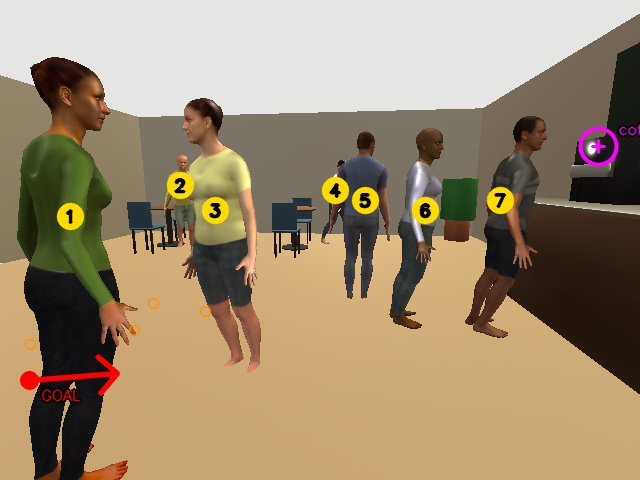
          <figcaption>The AI numbers everyone it sees, including people chatting nearby. The robot counts someone as waiting only if they step up when the line moves.</figcaption>
        </figure>
        <div><div class="chart-wrap"><svg class="chart fit" viewBox="0 0 480 190" role="img" aria-label="Time spent lined up behind someone not in the line, cut by the check, per model"><circle class="ring-track" cx="80" cy="78" r="50" stroke-width="16"/><circle class="ring-cut" cx="80" cy="78" r="50" stroke-width="16" stroke-dasharray="250.7 314.2" transform="rotate(-90 80 78)"><title>DeepSeek: 1,005 s without the check, 203 s with it (60 runs)</title></circle><text class="big" x="80.0" y="84.0" text-anchor="middle" style="font-size:30px">80%</text><text class="tick" x="80.0" y="104.0" text-anchor="middle" style="font-size:15px">less</text><text class="lab" x="80.0" y="160.0" text-anchor="middle" style="font-size:17px">DeepSeek</text><text class="tick" x="80.0" y="181.0" text-anchor="middle" style="font-size:15px">1,005 s → 203 s</text><circle class="ring-track" cx="240" cy="78" r="50" stroke-width="16"/><circle class="ring-cut" cx="240" cy="78" r="50" stroke-width="16" stroke-dasharray="206.3 314.2" transform="rotate(-90 240 78)"><title>Claude Sonnet: 938 s without the check, 322 s with it (30 runs)</title></circle><text class="big" x="240.0" y="84.0" text-anchor="middle" style="font-size:30px">66%</text><text class="tick" x="240.0" y="104.0" text-anchor="middle" style="font-size:15px">less</text><text class="lab" x="240.0" y="160.0" text-anchor="middle" style="font-size:17px">Claude Sonnet</text><text class="tick" x="240.0" y="181.0" text-anchor="middle" style="font-size:15px">938 s → 322 s</text><circle class="ring-track" cx="400" cy="78" r="50" stroke-width="16"/><circle class="ring-cut" cx="400" cy="78" r="50" stroke-width="16" stroke-dasharray="274.8 314.2" transform="rotate(-90 400 78)"><title>Qwen: 2,065 s without the check, 259 s with it (60 runs, 240 s each)</title></circle><text class="big" x="400.0" y="84.0" text-anchor="middle" style="font-size:30px">87%</text><text class="tick" x="400.0" y="104.0" text-anchor="middle" style="font-size:15px">less</text><text class="lab" x="400.0" y="160.0" text-anchor="middle" style="font-size:17px">Qwen</text><text class="tick" x="400.0" y="181.0" text-anchor="middle" style="font-size:15px">2,065 s → 259 s</text></svg></div><div class="legend"><span><i class="mine"></i>Time removed by the check</span><span><i class="base"></i>Still left</span></div><p class="note">Time spent lined up behind someone who was not in the line, without and with the check, added over all runs (Qwen ran 240 seconds per run). Part of the best moving-line version.</p></div>
      </div>
    </div>
    <div class="plate" id="moving-camera">
      <h3>The robot's own camera is enough</h3>
      <p>The robot followed people with its own camera instead of the simulator's exact positions. Time in the right spot stayed the same.</p>
      <div class="legend"><span><i class="base"></i>Simulator's exact positions</span><span><i class="mine"></i>Robot's own camera</span></div>
      <div class="chart-wrap"><svg class="chart" viewBox="0 0 640 244" role="img" aria-label="Time in the right spot with exact positions against the robot's own camera, per model"><line class="grid" x1="56" x2="632" y1="214.0" y2="214.0"/><text class="tick" x="48.0" y="218.0" text-anchor="end">0%</text><line class="grid" x1="56" x2="632" y1="168.0" y2="168.0"/><text class="tick" x="48.0" y="172.0" text-anchor="end">10%</text><line class="grid" x1="56" x2="632" y1="122.0" y2="122.0"/><text class="tick" x="48.0" y="126.0" text-anchor="end">20%</text><line class="grid" x1="56" x2="632" y1="76.0" y2="76.0"/><text class="tick" x="48.0" y="80.0" text-anchor="end">30%</text><line class="grid" x1="56" x2="632" y1="30.0" y2="30.0"/><text class="tick" x="48.0" y="34.0" text-anchor="end">40%</text><rect class="c-point" x="88.0" y="65.0" width="36" height="149.0" rx="3"><title>Claude Sonnet · exact positions: 32%</title></rect><text class="val" x="106.0" y="58.0" text-anchor="middle">32%</text><rect class="c-ours" x="132.0" y="70.5" width="36" height="143.5" rx="3"><title>Claude Sonnet · own camera: 31%</title></rect><text class="val" x="150.0" y="63.5" text-anchor="middle">31%</text><text class="lab" x="128.0" y="234.0" text-anchor="middle">Claude Sonnet</text><rect class="c-point" x="232.0" y="87.0" width="36" height="127.0" rx="3"><title>DeepSeek · exact positions: 28%</title></rect><text class="val" x="250.0" y="80.0" text-anchor="middle">28%</text><rect class="c-ours" x="276.0" y="86.1" width="36" height="127.9" rx="3"><title>DeepSeek · own camera: 28%</title></rect><text class="val" x="294.0" y="79.1" text-anchor="middle">28%</text><text class="lab" x="272.0" y="234.0" text-anchor="middle">DeepSeek</text><rect class="c-point" x="376.0" y="68.2" width="36" height="145.8" rx="3"><title>Claude Haiku · exact positions: 32%</title></rect><text class="val" x="394.0" y="61.2" text-anchor="middle">32%</text><rect class="c-ours" x="420.0" y="53.9" width="36" height="160.1" rx="3"><title>Claude Haiku · own camera: 35%</title></rect><text class="val" x="438.0" y="46.9" text-anchor="middle">35%</text><text class="lab" x="416.0" y="234.0" text-anchor="middle">Claude Haiku</text><rect class="c-point" x="520.0" y="111.9" width="36" height="102.1" rx="3"><title>Gemini · exact positions: 22%</title></rect><text class="val" x="538.0" y="104.9" text-anchor="middle">22%</text><rect class="c-ours" x="564.0" y="106.8" width="36" height="107.2" rx="3"><title>Gemini · own camera: 23%</title></rect><text class="val" x="582.0" y="99.8" text-anchor="middle">23%</text><text class="lab" x="560.0" y="234.0" text-anchor="middle">Gemini</text></svg></div>
      <p class="note">Time in the right spot, 125 runs. The two columns are within 3 points on every model.</p>
    </div>
    <div class="plate">
      <h3>How far from perfect, and why</h3>
      <p>A final test on 72 new scenes. Dashed "test robots" were given part of the true answer, to show what each missing piece costs.</p>
      <h4>What each missing piece costs (DeepSeek)</h4>
      <div class="legend"><span><i class="mine"></i>Our best version</span><span><i class="test"></i>Test robot, given part of the true answer</span></div>
      <div class="chart-wrap"><svg class="chart" viewBox="0 0 640 290" role="img" aria-label="DeepSeek: time in the right spot for our best version and for test robots given parts of the true answer"><line class="grid" x1="56" x2="632" y1="226.0" y2="226.0"/><text class="tick" x="48.0" y="230.0" text-anchor="end">0%</text><line class="grid" x1="56" x2="632" y1="178.0" y2="178.0"/><text class="tick" x="48.0" y="182.0" text-anchor="end">25%</text><line class="grid" x1="56" x2="632" y1="130.0" y2="130.0"/><text class="tick" x="48.0" y="134.0" text-anchor="end">50%</text><line class="grid" x1="56" x2="632" y1="82.0" y2="82.0"/><text class="tick" x="48.0" y="86.0" text-anchor="end">75%</text><line class="grid" x1="56" x2="632" y1="34.0" y2="34.0"/><text class="tick" x="48.0" y="38.0" text-anchor="end">100%</text><line class="limit" x1="56" x2="632" y1="34.0" y2="34.0"/><text class="tick" x="630.0" y="27.0" text-anchor="end">perfect</text><rect class="c-ours" x="58.0" y="186.1" width="111.2" height="39.9" rx="3"><title>Our best version: 21%</title></rect><text class="val" x="113.6" y="178.1" text-anchor="middle">21%</text><text class="lab" x="113.6" y="244.0" text-anchor="middle">Our best version</text><rect class="test-col" x="173.2" y="184.1" width="111.2" height="41.9" rx="3"><title>Told who is waiting: 22%</title></rect><text class="val" x="228.8" y="176.1" text-anchor="middle">22%</text><text class="tick" x="228.8" y="244.0" text-anchor="middle">Told who is</text><text class="tick" x="228.8" y="259.0" text-anchor="middle">waiting</text><rect class="test-col" x="288.4" y="175.9" width="111.2" height="50.1" rx="3"><title>Best version, told where the counter is: 26%</title></rect><text class="val" x="344.0" y="167.9" text-anchor="middle">26%</text><text class="tick" x="344.0" y="244.0" text-anchor="middle">Best version,</text><text class="tick" x="344.0" y="259.0" text-anchor="middle">told where the</text><text class="tick" x="344.0" y="274.0" text-anchor="middle">counter is</text><rect class="test-col" x="403.6" y="162.6" width="111.2" height="63.4" rx="3"><title>Told who is waiting and where the counter is: 33%</title></rect><text class="val" x="459.2" y="154.6" text-anchor="middle">33%</text><text class="tick" x="459.2" y="244.0" text-anchor="middle">Told who is</text><text class="tick" x="459.2" y="259.0" text-anchor="middle">waiting and where</text><text class="tick" x="459.2" y="274.0" text-anchor="middle">the counter is</text><rect class="test-col" x="518.8" y="103.1" width="111.2" height="122.9" rx="3"><title>Told the exact spot: 64%</title></rect><text class="val" x="574.4" y="95.1" text-anchor="middle">64%</text><text class="tick" x="574.4" y="244.0" text-anchor="middle">Told the</text><text class="tick" x="574.4" y="259.0" text-anchor="middle">exact spot</text></svg></div>
      <h4>Our best version against a running guess of who is waiting</h4>
      <div class="heat-wrap"><table class="heatmap"><thead><tr><th></th><th>Our best version</th><th>Running guess</th><th>Running guess, knows who joined</th><th>Running guess, follows the line's path</th></tr></thead><tbody><tr><th scope="row">DeepSeek</th><td class="heat s4" title="21%">21%</td><td class="heat s2" title="12%">12%</td><td class="heat s3" title="16%">16%</td><td class="heat s2" title="11%">11%</td></tr><tr><th scope="row">Claude Sonnet</th><td class="heat s5" title="25%">25%</td><td class="heat s3" title="13%">13%</td><td class="heat s3" title="17%">17%</td><td class="heat s2" title="12%">12%</td></tr><tr><th scope="row">Claude Haiku<small> · 55 of 72 scenes</small></th><td class="heat s5" title="23%">23%</td><td class="heat s3" title="16%">16%</td><td class="heat s4" title="22%">22%</td><td class="heat s3" title="17%">17%</td></tr><tr><th scope="row">Gemini<small> · 71 of 72 scenes</small></th><td class="heat s5" title="23%">23%</td><td class="heat s3" title="14%">14%</td><td class="heat s4" title="19%">19%</td><td class="heat s3" title="13%">13%</td></tr></tbody></table></div>
      <p class="note">Time in the right spot. Darker is more.</p>
      <ul class="plain">
        <li>Even told the exact spot, a robot manages only 64%: it has to walk there first, and keep moving as the line moves.</li>
        <li>The biggest loss is where it stands at the very front, and where it thinks the counter is.</li>
        <li>A running guess of who is waiting did not beat our best version on any model.</li>
      </ul>
      <p class="note">Right spot: just behind the last person waiting, on the line, facing the front.</p>
    </div>
    <div class="plate" id="moving-cutins">
      <h3>Does updating make the robot cut into the line?</h3>
      <p>Updating keeps the robot near the line far longer, so it has more chances to cut in. Per minute spent near the line, it cuts in no more often than deciding once.</p>
      <div class="numbers mini">
        <div class="num"><span class="big">14.5% vs 13.7%</span><span class="what">Claude Sonnet: time cutting in front of someone, as a share of time near the line, updating vs deciding once</span></div>
        <div class="num"><span class="big">Fewer on Haiku</span><span class="what">more on Gemini, whose decide-once version rarely gets near the line at all</span></div>
      </div>
    </div>
    <div class="plate" id="moving-bumps">
      <h3>Does the robot bump into people?</h3>
      <p>We measured how close the robot came to anyone, every second of every run.</p>
      <div class="numbers mini">
        <div class="num"><span class="big">2%</span><span class="what">of the time within 0.55 m of someone when updating, against 7% when deciding once by pointing and 10% when asking again after every answer</span></div>
        <div class="num"><span class="big">Mostly standing still</span><span class="what">for the updating robot, 3 in 4 of its closest moments came while it stood still and a person walked into it</span></div>
      </div>
      <p class="note">The simulated people stop for at most 2 seconds when something is in their way, then walk on. About a quarter of runs still have at least one moment closer than 0.3 m.</p>
    </div>
    <div class="plate" id="moving-counter">
      <h3>Next step: knowing where the counter serves</h3>
      <p>The biggest remaining loss is at the front of the line. A test robot told exactly where the counter serves did better on all four models, so watching where customers are served is the first thing to add.</p>
      <div class="waffle" role="img" aria-label="72 scenes: better in 46, about the same in 12, worse in 14"><i class="w-b"></i><i class="w-b"></i><i class="w-b"></i><i class="w-b"></i><i class="w-b"></i><i class="w-b"></i><i class="w-b"></i><i class="w-b"></i><i class="w-b"></i><i class="w-b"></i><i class="w-b"></i><i class="w-b"></i><i class="w-b"></i><i class="w-b"></i><i class="w-b"></i><i class="w-b"></i><i class="w-b"></i><i class="w-b"></i><i class="w-b"></i><i class="w-b"></i><i class="w-b"></i><i class="w-b"></i><i class="w-b"></i><i class="w-b"></i><i class="w-b"></i><i class="w-b"></i><i class="w-b"></i><i class="w-b"></i><i class="w-b"></i><i class="w-b"></i><i class="w-b"></i><i class="w-b"></i><i class="w-b"></i><i class="w-b"></i><i class="w-b"></i><i class="w-b"></i><i class="w-b"></i><i class="w-b"></i><i class="w-b"></i><i class="w-b"></i><i class="w-b"></i><i class="w-b"></i><i class="w-b"></i><i class="w-b"></i><i class="w-b"></i><i class="w-b"></i><i class="w-s"></i><i class="w-s"></i><i class="w-s"></i><i class="w-s"></i><i class="w-s"></i><i class="w-s"></i><i class="w-s"></i><i class="w-s"></i><i class="w-s"></i><i class="w-s"></i><i class="w-s"></i><i class="w-s"></i><i class="w-w"></i><i class="w-w"></i><i class="w-w"></i><i class="w-w"></i><i class="w-w"></i><i class="w-w"></i><i class="w-w"></i><i class="w-w"></i><i class="w-w"></i><i class="w-w"></i><i class="w-w"></i><i class="w-w"></i><i class="w-w"></i><i class="w-w"></i></div>
      <div class="legend"><span><i class="w-b"></i>Better (46 scenes)</span><span><i class="w-s"></i>About the same (12)</span><span><i class="w-w"></i>Worse (14)</span></div>
      <div class="numbers mini"><div class="num"><span class="big">+12.8</span><span class="what">Gemini</span></div><div class="num"><span class="big">+8.6</span><span class="what">Claude Sonnet</span></div><div class="num"><span class="big">+4.9</span><span class="what">Claude Haiku</span></div><div class="num"><span class="big">+4.2</span><span class="what">DeepSeek</span></div></div>
      <p class="note">Each square is one of 72 new scenes, all four models together. The numbers are the extra time in the right spot per model, in points.</p>
    </div>
    <div class="plate" id="moving-speed">
      <h3>The school's free models answer too slowly for a moving line</h3>
      <div class="chart-wrap"><svg class="chart" viewBox="0 0 640 264" role="img" aria-label="Typical time to the first answer per model, against the 92-second run"><line class="grid" x1="56" x2="632" y1="222.0" y2="222.0"/><text class="tick" x="48.0" y="226.0" text-anchor="end">0 s</text><line class="grid" x1="56" x2="632" y1="174.0" y2="174.0"/><text class="tick" x="48.0" y="178.0" text-anchor="end">60 s</text><line class="grid" x1="56" x2="632" y1="126.0" y2="126.0"/><text class="tick" x="48.0" y="130.0" text-anchor="end">120 s</text><line class="grid" x1="56" x2="632" y1="78.0" y2="78.0"/><text class="tick" x="48.0" y="82.0" text-anchor="end">180 s</text><line class="grid" x1="56" x2="632" y1="30.0" y2="30.0"/><text class="tick" x="48.0" y="34.0" text-anchor="end">240 s</text><rect class="fill-ok" x="82.0" y="214.0" width="44" height="8.0" rx="3"><title>Claude Haiku 5.5: 10 s</title></rect><text class="val" x="104.0" y="207.0" text-anchor="middle">10 s</text><text class="lab" x="104.0" y="240.0" text-anchor="middle">Claude</text><text class="lab" x="104.0" y="255.0" text-anchor="middle">Haiku 5.5</text><rect class="fill-ok" x="178.0" y="211.6" width="44" height="10.4" rx="3"><title>Claude Sonnet 5.5: 13 s</title></rect><text class="val" x="200.0" y="204.6" text-anchor="middle">13 s</text><text class="lab" x="200.0" y="240.0" text-anchor="middle">Claude</text><text class="lab" x="200.0" y="255.0" text-anchor="middle">Sonnet 5.5</text><rect class="fill-ok" x="274.0" y="206.8" width="44" height="15.2" rx="3"><title>Gemini 3.8: 19 s</title></rect><text class="val" x="296.0" y="199.8" text-anchor="middle">19 s</text><text class="lab" x="296.0" y="240.0" text-anchor="middle">Gemini 3.8</text><rect class="fill-ok" x="370.0" y="206.8" width="44" height="15.2" rx="3"><title>DeepSeek: 19 s</title></rect><text class="val" x="392.0" y="199.8" text-anchor="middle">19 s</text><text class="lab" x="392.0" y="240.0" text-anchor="middle">DeepSeek</text><rect class="fill-slow" x="466.0" y="157.2" width="44" height="64.8" rx="3"><title>Qwen: 81 s</title></rect><text class="val" x="488.0" y="177.2" text-anchor="middle" style="fill:#fff">81 s</text><text class="lab" x="488.0" y="240.0" text-anchor="middle">Qwen</text><rect class="fill-slow" x="562.0" y="48.4" width="44" height="173.6" rx="3"><title>GLM: 217 s</title></rect><text class="val" x="584.0" y="41.4" text-anchor="middle">217 s</text><text class="lab" x="584.0" y="240.0" text-anchor="middle">GLM</text><line class="limit" x1="56" x2="632" y1="148.4" y2="148.4"/><text class="tick" x="62.0" y="141.4" text-anchor="start">a run lasts 92 s</text></svg></div>
      <p class="note">Typical time to the first answer. Qwen and GLM take longer than the line stays put. Given 240 seconds per run, Qwen shows the same result as the others (19 of 25 runs better, 1 worse); GLM is still too slow.</p>
    </div>
    <div class="plate" id="moving-open">
      <h3>Not shown yet</h3>
      <ul class="plain">
        <li><b>Best moving version on new scenes.</b> The school server was 6 times slower than usual that day: the first answer arrived in time in only 39 of 72 scenes. Where it did, the result pointed the same way (9 better, 2 worse).</li>
        <li><b>The people finder in moving lines.</b> It helps in still scenes, but on DeepSeek in moving lines it lowered time in the right spot (10% against 29%).</li>
      </ul>
    </div>
  </section>

  <section id="tried">
    <p class="eyebrow">Also tested</p>
    <h2>Other ideas we tested</h2>
    <p>Each idea was tested on the same scenes and scored the same way. Some helped; most did not.</p>
    <div class="ideas">

      <article class="idea">
        <span class="chip drop">Dropped</span>
        <h3>Training a model to choose the spot</h3>
        <p>We trained a small model to suggest standing spots from a map seen from above.</p>
        <div class="chart-wrap"><svg class="chart mini" viewBox="0 0 380 180" role="img" aria-label="Good spots: trained model against our method"><line class="axis" x1="20" x2="360" y1="150" y2="150"/><rect class="c-point" x="85.0" y="79.3" width="40" height="70.7" rx="3"><title>Trained model · good spots: 57%</title></rect><text class="val" x="105.0" y="72.3" text-anchor="middle">57%</text><text class="lab" x="105.0" y="170.0" text-anchor="middle">Trained model</text><rect class="c-ours" x="255.0" y="55.8" width="40" height="94.2" rx="3"><title>Our method · good spots: 76%</title></rect><text class="val" x="275.0" y="48.8" text-anchor="middle">76%</text><text class="lab" x="275.0" y="170.0" text-anchor="middle">Our method</text></svg></div>
        <p class="note">Good spots on the same test. It learned from our own rules, so at best it copies them, and it failed on unfamiliar situations. A second try, a learned map of likely good spots, did worse than a simple rule of thumb.</p>
      </article>

      <article class="idea">
        <span class="chip none">No gain</span>
        <h3>Walking while the AI is still thinking</h3>
        <figure>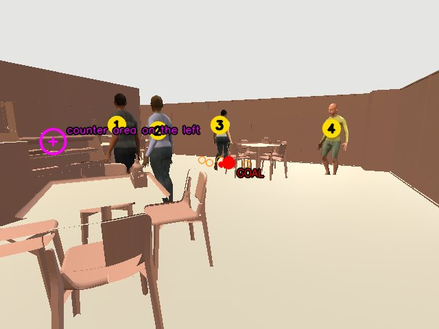</figure>
        <p>Start walking toward the counter as soon as the AI names it, before the full answer arrives.</p>
        <div class="wl-wrap">
          <div class="wl-row"><span class="who">Claude Sonnet</span><div class="wl"><span class="w" style="flex:12">12</span><span class="t" style="flex:11">11</span><span class="l" style="flex:27">27</span></div></div>
          <div class="wl-row"><span class="who">DeepSeek</span><div class="wl"><span class="w" style="flex:7">7</span><span class="t" style="flex:8">8</span><span class="l" style="flex:10">10</span></div></div>
          <div class="legend"><span><i class="lg-w"></i>Better</span><span><i class="lg-t"></i>About the same</span><span><i class="lg-l"></i>Worse</span></div>
        </div>
        <p class="note">Runs compared with not walking early. The counter isn't where to stand, so the robot often ended up on the wrong side of the line.</p>
      </article>

      <article class="idea">
        <span class="chip drop">Dropped</span>
        <h3>Picking from numbered spots instead of pointing</h3>
        <figure>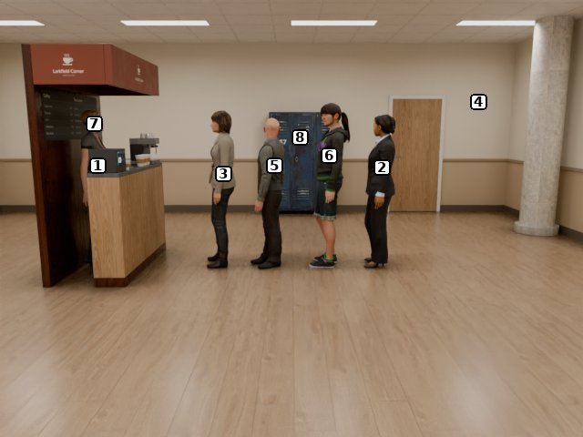</figure>
        <p>Label the people and objects with numbers and let the AI pick one, instead of clicking anywhere in the picture.</p>
        <div class="div-chart">
          <div class="div-row"><span class="who">GLM</span><div class="neg"></div><div class="pos"><i style="width:61%"></i><b>+22</b></div></div>
          <div class="div-row"><span class="who">Qwen</span><div class="neg"></div><div class="pos"><i style="width:3%"></i><b>+1</b></div></div>
          <div class="div-row"><span class="who">Gemini</span><div class="neg"><b>−9</b><i style="width:25%"></i></div><div class="pos"></div></div>
          <div class="div-row"><span class="who">DeepSeek</span><div class="neg"><b>−27</b><i style="width:75%"></i></div><div class="pos"></div></div>
        </div>
        <p class="note">Change in good spots (of 252). Only GLM, the weakest pointer, gained. Even a perfect pick every time would have cost Claude Sonnet 11 and Haiku 17: the exact click carries useful detail.</p>
      </article>

      <article class="idea">
        <span class="chip small">Safe but rare</span>
        <h3>Fixing a person half-hidden behind someone's arm</h3>
        <figure>
          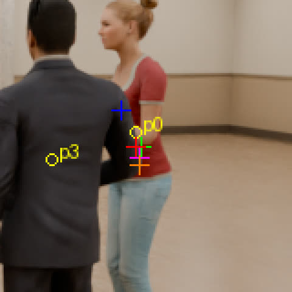
          <figcaption>Asked for the woman in red, every model clicked her (coloured crosses), but right at the edge of the man's arm, so the robot's depth reading landed on him.</figcaption>
        </figure>
        <p>The fix: if the depth reading lands more than half a metre from the person found at the click, move the target onto that person.</p>
        <div class="numbers mini">
          <div class="num"><span class="big">11 fixed</span><span class="what">0 broken, out of 432 answers on new scenes</span></div>
          <div class="num"><span class="big">+3.7 points</span><span class="what">on person targets (300 → 312 of 324)</span></div>
        </div>
        <p class="note">It works, but the case is rare, so the overall gain is small. On the paid models it was needed 3 times in 432 answers, and broke nothing.</p>
      </article>

      <article class="idea">
        <span class="chip none">No gain</span>
        <h3>A running guess of who is waiting</h3>
        <figure>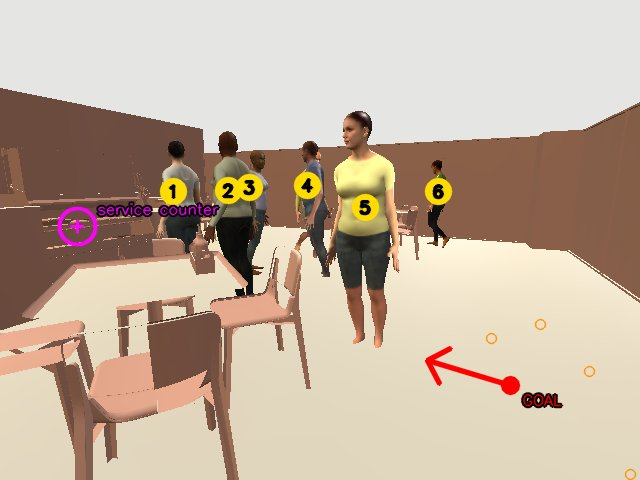</figure>
        <p>One running estimate of how likely each person is to be waiting, instead of our best version's rules.</p>
        <div class="legend"><span><i class="base"></i>Running guess</span><span><i class="mine"></i>Our best version</span></div><div class="chart-wrap"><svg class="chart mini" viewBox="0 0 380 180" role="img" aria-label="Time in the right spot: running guess against our best version"><line class="axis" x1="20" x2="360" y1="150" y2="150"/><rect class="c-point" x="59.0" y="83.9" width="40" height="66.1" rx="3"><title>DeepSeek · running guess: 16%</title></rect><text class="val" x="79.0" y="76.9" text-anchor="middle">16%</text><rect class="c-ours" x="111.0" y="63.2" width="40" height="86.8" rx="3"><title>DeepSeek · our best version: 21%</title></rect><text class="val" x="131.0" y="56.2" text-anchor="middle">21%</text><text class="lab" x="105.0" y="170.0" text-anchor="middle">DeepSeek</text><rect class="c-point" x="229.0" y="79.7" width="40" height="70.3" rx="3"><title>Claude Sonnet · running guess: 17%</title></rect><text class="val" x="249.0" y="72.7" text-anchor="middle">17%</text><rect class="c-ours" x="281.0" y="46.7" width="40" height="103.3" rx="3"><title>Claude Sonnet · our best version: 25%</title></rect><text class="val" x="301.0" y="39.7" text-anchor="middle">25%</text><text class="lab" x="275.0" y="170.0" text-anchor="middle">Claude Sonnet</text></svg></div>
        <p class="note">Time in the right spot, final test. It knew better who was waiting (92% right) but stood in the wrong place more often, mostly at the front.</p>
      </article>

      <article class="idea">
        <span class="chip drop">Worse</span>
        <h3>The people finder in moving lines</h3>
        <figure>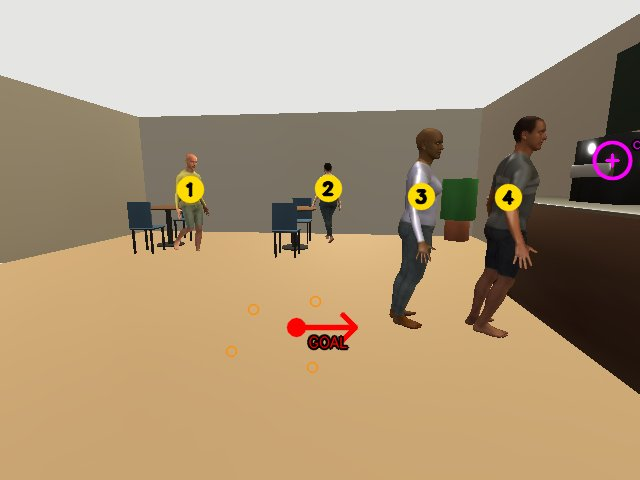</figure>
        <p>Give the AI the people finder's people instead of asking it who is there, as in the faster still-scene version.</p>
        <div class="legend"><span><i class="base"></i>With the people finder</span><span><i class="mine"></i>Asking the AI</span></div><div class="chart-wrap"><svg class="chart mini" viewBox="0 0 380 180" role="img" aria-label="Time in the right spot: people finder against asking the AI"><line class="axis" x1="20" x2="360" y1="150" y2="150"/><rect class="c-point" x="144.0" y="114.6" width="40" height="35.4" rx="3"><title>DeepSeek · with the people finder: 10%</title></rect><text class="val" x="164.0" y="107.6" text-anchor="middle">10%</text><rect class="c-ours" x="196.0" y="47.3" width="40" height="102.7" rx="3"><title>DeepSeek · asking the AI: 29%</title></rect><text class="val" x="216.0" y="40.3" text-anchor="middle">29%</text><text class="lab" x="190.0" y="170.0" text-anchor="middle">DeepSeek</text></svg></div>
        <p class="note">Time in the right spot, 25 runs. It helps in still scenes but not in moving lines.</p>
      </article>

      <article class="idea">
        <span class="chip none">No gain</span>
        <h3>Combining several AI models</h3>
        <p>Let several models vote on the spot, or pass hard cases from a cheap model to a strong one.</p>
        <div class="numbers mini">
          <div class="num"><span class="big">+1 to +5</span><span class="what">good spots (of 252) from voting</span></div>
          <div class="num"><span class="big">Best model alone</span><span class="what">beat passing hard cases to a stronger model</span></div>
        </div>
        <p class="note">Too small to be worth the extra cost.</p>
      </article>

      <article class="idea">
        <span class="chip none">No gain</span>
        <h3>Knowing when the AI is unsure</h3>
        <p>Flag answers where different ways of finding people disagree, so the robot could ask again or wait.</p>
        <div class="numbers mini">
          <div class="num"><span class="big">Weak signal</span><span class="what">it separated good from bad answers only somewhat, and barely at all for paid models</span></div>
        </div>
        <p class="note">Not reliable enough to act on.</p>
      </article>

      <article class="idea">
        <span class="chip small">Lesson</span>
        <h3>Dense crowds</h3>
        <p>Crowded versions of the scenes, with the robot told exactly where everyone is.</p>
        <div class="numbers mini">
          <div class="num"><span class="big">Only at lines</span><span class="what">failures in crowds came from people near the line being counted as waiting</span></div>
        </div>
        <p class="note">That is the problem the bystander check in moving lines solves.</p>
      </article>

      <article class="idea">
        <span class="chip none">No gain</span>
        <h3>Fixing the front of the line</h3>
        <p>The video's robot backs away from the front and waits beside the counter. Two rules: once in line, never step back while its spot is free; and when the last person ahead is served, take where they stood, even if they rejoin the line behind.</p>
        <div class="numbers mini">
          <div class="num"><span class="big">40 → 8</span><span class="what">seconds spent stepping back after joining, 50 runs</span></div>
          <div class="num"><span class="big">About the same</span><span class="what">time in the right spot (+1 point on DeepSeek and on Claude Sonnet)</span></div>
        </div>
        <p class="note">It came close to people less often, but it still waits in the wrong place at the front: it does not know where the counter serves.</p>
      </article>

    </div>
  </section>


  <footer class="src">
    <p><b>Where the numbers come from.</b> Still scenes: three sets of realistic scenes, 252 tries per model. Hidden scenes: 36 tries per situation and model. People finder: 40 new scenes. Moving lines: 25 simulator runs per model, and a final test on 72 new scenes. For the main comparisons, the rules for passing were written down before the results came in.</p>
  </footer>
</main>

<dialog class="lightbox" id="lightbox" aria-label="Enlarged picture">
  <button class="close" type="button" aria-label="Close">×</button>
  
  <p></p>
</dialog>
<script>
(() => {
  const box = document.getElementById("lightbox");
  const big = box.querySelector("img"), cap = box.querySelector("p");
  const icon = '<svg viewBox="0 0 16 16" fill="none" stroke="currentColor" stroke-width="1.8" stroke-linecap="round" aria-hidden="true"><path d="M10 2h4v4M6 14H2v-4M14 2 9 7M2 14l5-5"/></svg>';
  const open = (img) => {
    big.src = img.currentSrc || img.src; big.alt = img.alt;
    const fc = img.closest("figure") && img.closest("figure").querySelector("figcaption");
    cap.textContent = fc ? fc.textContent.trim() : "";
    cap.hidden = !cap.textContent;
    box.showModal();
  };
  document.querySelectorAll("main img").forEach((img) => {
    const wrap = document.createElement("span");
    wrap.className = "zoomable";
    img.parentNode.insertBefore(wrap, img);
    wrap.appendChild(img);
    const btn = document.createElement("button");
    btn.type = "button"; btn.className = "zoom-btn"; btn.innerHTML = icon;
    btn.setAttribute("aria-label", "Enlarge picture" + (img.alt ? ": " + img.alt : ""));
    btn.addEventListener("click", () => open(img));
    img.addEventListener("click", () => open(img));
    wrap.appendChild(btn);
  });
  box.querySelector(".close").addEventListener("click", () => box.close());
  box.addEventListener("click", (e) => { if (e.target === box) box.close(); });
})();
</script>
